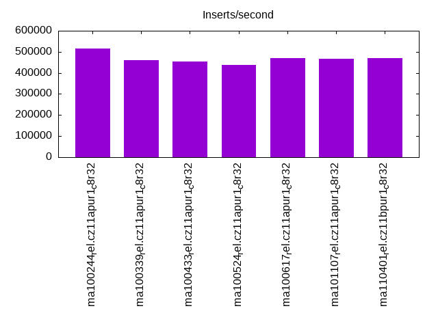
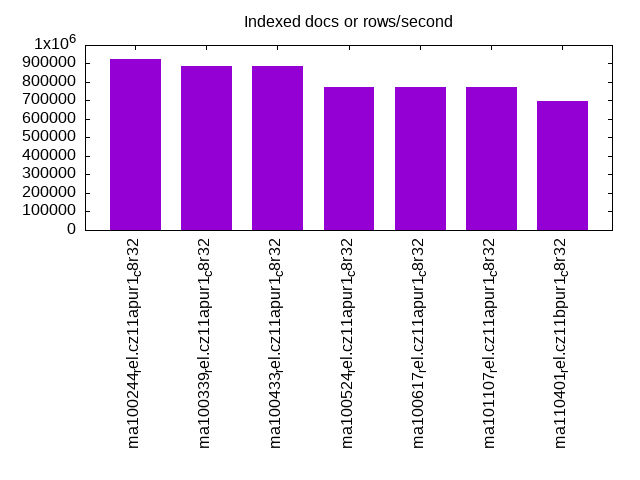
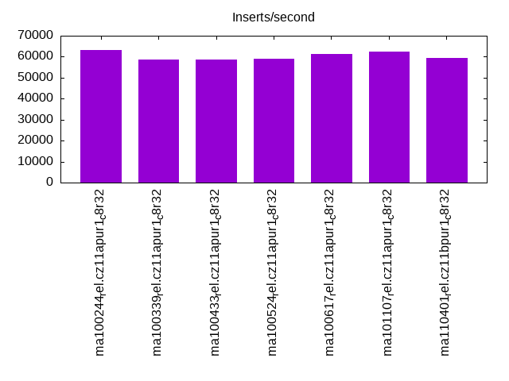
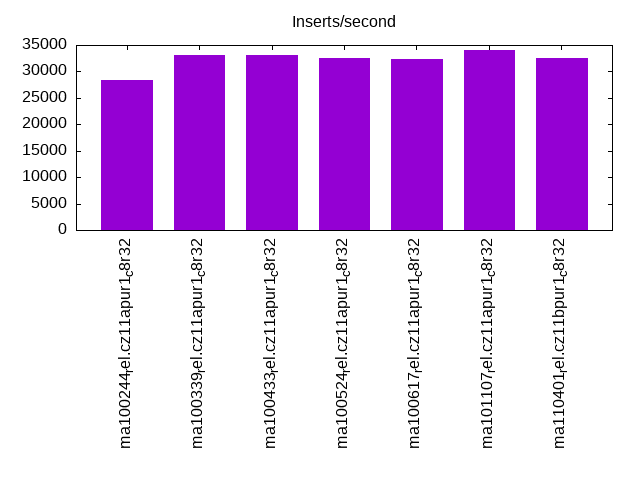
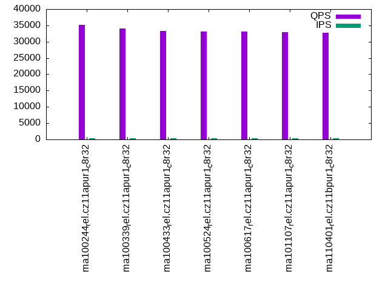
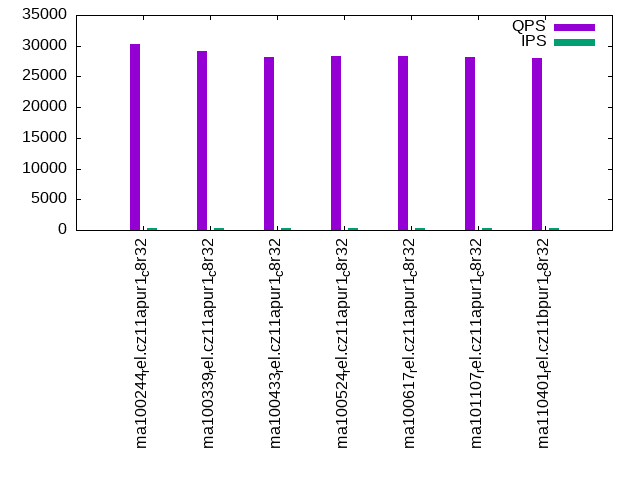
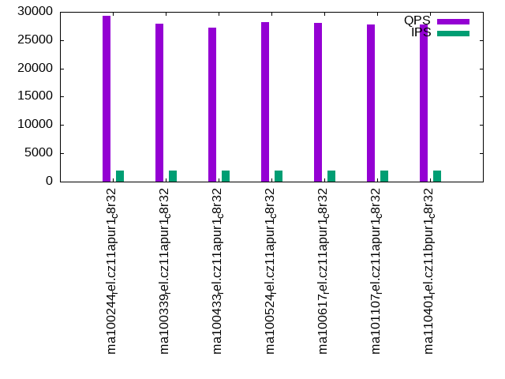
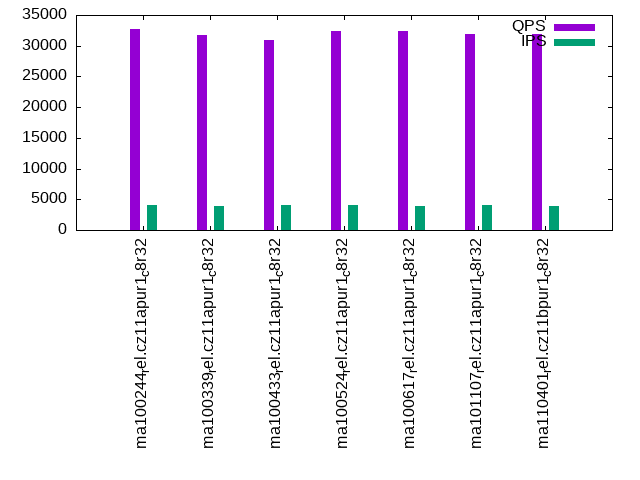
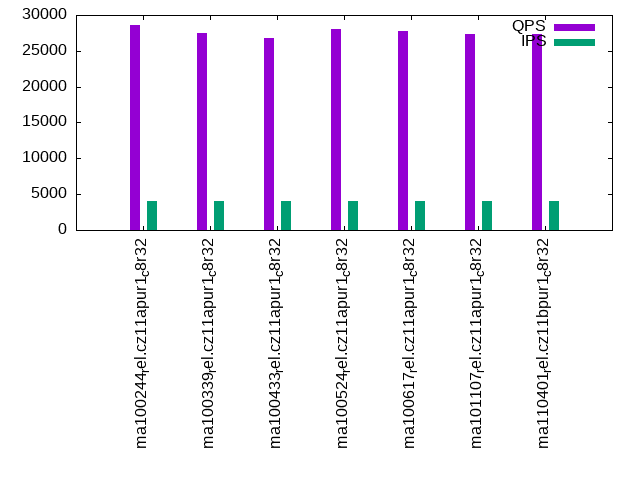

This is a report for the insert benchmark with 48M docs and 4 client(s). It is generated by scripts (bash, awk, sed) and Tufte might not be impressed. An overview of the insert benchmark is here and a short update is here. Below, by DBMS, I mean DBMS+version.config. An example is my8020.c10b40 where my means MySQL, 8020 is version 8.0.20 and c10b40 is the name for the configuration file.
The test server has 8 AMD cores, 32G RAM and an NVMe SSD. It is described here as the ASUS PN53. The benchmark was run with 1 client and there were 1 or 3 connections per client (1 for queries or inserts without rate limits, 1+1 for rate limited inserts+deletes). It uses 4 tables with a table per client. It loads 12M rows per table without secondary indexes, creates 3 secondary indexes per table, then inserts 40 rows per table with a delete per insert to avoid growing the table. It then does 6 read+write tests for 1800s each that do queries as fast as possible with 100,100,500,500,1000,1000 inserts/s and the same for deletes/s per client concurrent with the queries. The database is cached in memory. Clients and the DBMS share one server. The per-database configs are in the per-database subdirectories here.
The tested DBMS are:
The numbers are inserts/s for l.i0, l.i1 and l.i2, indexed docs (or rows) /s for l.x and queries/s for qr100, qp100 thru qr1000, qp1000" The values are the average rate over the entire test for inserts (IPS) and queries (QPS). The range of values for IPS and QPS is split into 3 parts: bottom 25%, middle 50%, top 25%. Values in the bottom 25% have a red background, values in the top 25% have a green background and values in the middle have no color. A gray background is used for values that can be ignored because the DBMS did not sustain the target insert rate. Red backgrounds are not used when the minimum value is within 80% of the max value.
| dbms | l.i0 | l.x | l.i1 | l.i2 | qr100 | qp100 | qr500 | qp500 | qr1000 | qp1000 |
|---|---|---|---|---|---|---|---|---|---|---|
| ma100244_rel.cz11apur1_c8r32 | 516129 | 923079 | 63272 | 28318 | 35182 | 30315 | 33522 | 29242 | 32762 | 28626 |
| ma100339_rel.cz11apur1_c8r32 | 461538 | 888891 | 58770 | 33195 | 34085 | 29098 | 32559 | 27932 | 31813 | 27463 |
| ma100433_rel.cz11apur1_c8r32 | 452830 | 888891 | 58608 | 33195 | 33318 | 28215 | 31687 | 27243 | 30919 | 26799 |
| ma100524_rel.cz11apur1_c8r32 | 436364 | 774195 | 59095 | 32553 | 33180 | 28390 | 32803 | 28117 | 32448 | 28001 |
| ma100617_rel.cz11apur1_c8r32 | 470588 | 774195 | 61391 | 32258 | 33143 | 28264 | 32893 | 28038 | 32471 | 27770 |
| ma101107_rel.cz11apur1_c8r32 | 466019 | 774195 | 62530 | 34115 | 32921 | 28142 | 32371 | 27836 | 31977 | 27367 |
| ma110401_rel.cz11bpur1_c8r32 | 470588 | 695654 | 59452 | 32620 | 32774 | 27960 | 32452 | 27740 | 31931 | 27384 |
This table has relative throughput, throughput for the DBMS relative to the DBMS in the first line, using the absolute throughput from the previous table. Values less than 0.95 have a yellow background. Values greater than 1.05 have a blue background.
| dbms | l.i0 | l.x | l.i1 | l.i2 | qr100 | qp100 | qr500 | qp500 | qr1000 | qp1000 |
|---|---|---|---|---|---|---|---|---|---|---|
| ma100244_rel.cz11apur1_c8r32 | 1.00 | 1.00 | 1.00 | 1.00 | 1.00 | 1.00 | 1.00 | 1.00 | 1.00 | 1.00 |
| ma100339_rel.cz11apur1_c8r32 | 0.89 | 0.96 | 0.93 | 1.17 | 0.97 | 0.96 | 0.97 | 0.96 | 0.97 | 0.96 |
| ma100433_rel.cz11apur1_c8r32 | 0.88 | 0.96 | 0.93 | 1.17 | 0.95 | 0.93 | 0.95 | 0.93 | 0.94 | 0.94 |
| ma100524_rel.cz11apur1_c8r32 | 0.85 | 0.84 | 0.93 | 1.15 | 0.94 | 0.94 | 0.98 | 0.96 | 0.99 | 0.98 |
| ma100617_rel.cz11apur1_c8r32 | 0.91 | 0.84 | 0.97 | 1.14 | 0.94 | 0.93 | 0.98 | 0.96 | 0.99 | 0.97 |
| ma101107_rel.cz11apur1_c8r32 | 0.90 | 0.84 | 0.99 | 1.20 | 0.94 | 0.93 | 0.97 | 0.95 | 0.98 | 0.96 |
| ma110401_rel.cz11bpur1_c8r32 | 0.91 | 0.75 | 0.94 | 1.15 | 0.93 | 0.92 | 0.97 | 0.95 | 0.97 | 0.96 |
This lists the average rate of inserts/s for the tests that do inserts concurrent with queries. For such tests the query rate is listed in the table above. The read+write tests are setup so that the insert rate should match the target rate every second. Cells that are not at least 95% of the target have a red background to indicate a failure to satisfy the target.
| dbms | qr100.L1 | qp100.L2 | qr500.L3 | qp500.L4 | qr1000.L5 | qp1000.L6 |
|---|---|---|---|---|---|---|
| ma100244_rel.cz11apur1_c8r32 | 399 | 399 | 1994 | 1994 | 3989 | 3989 |
| ma100339_rel.cz11apur1_c8r32 | 399 | 399 | 1994 | 1994 | 3987 | 3989 |
| ma100433_rel.cz11apur1_c8r32 | 399 | 399 | 1994 | 1993 | 3989 | 3989 |
| ma100524_rel.cz11apur1_c8r32 | 399 | 399 | 1994 | 1994 | 3989 | 3989 |
| ma100617_rel.cz11apur1_c8r32 | 399 | 399 | 1994 | 1994 | 3987 | 3987 |
| ma101107_rel.cz11apur1_c8r32 | 399 | 399 | 1993 | 1994 | 3989 | 3989 |
| ma110401_rel.cz11bpur1_c8r32 | 399 | 399 | 1994 | 1994 | 3987 | 3987 |
| target | 400 | 400 | 2000 | 2000 | 4000 | 4000 |
l.i0: load without secondary indexes. Graphs for performance per 1-second interval are here.
Average throughput:
Insert response time histogram: each cell has the percentage of responses that take <= the time in the header and max is the max response time in seconds. For the max column values in the top 25% of the range have a red background and in the bottom 25% of the range have a green background. The red background is not used when the min value is within 80% of the max value.
| dbms | 256us | 1ms | 4ms | 16ms | 64ms | 256ms | 1s | 4s | 16s | gt | max |
|---|---|---|---|---|---|---|---|---|---|---|---|
| ma100244_rel.cz11apur1_c8r32 | 97.470 | 2.196 | 0.307 | 0.011 | 0.016 | 0.153 | |||||
| ma100339_rel.cz11apur1_c8r32 | 94.629 | 5.017 | 0.321 | 0.017 | 0.016 | 0.136 | |||||
| ma100433_rel.cz11apur1_c8r32 | 95.271 | 4.370 | 0.328 | 0.014 | 0.016 | 0.131 | |||||
| ma100524_rel.cz11apur1_c8r32 | 91.725 | 7.660 | 0.484 | 0.100 | 0.031 | 0.126 | |||||
| ma100617_rel.cz11apur1_c8r32 | 92.357 | 7.297 | 0.311 | 0.017 | 0.018 | 0.181 | |||||
| ma101107_rel.cz11apur1_c8r32 | 89.152 | 10.508 | 0.305 | 0.018 | 0.017 | 0.182 | |||||
| ma110401_rel.cz11bpur1_c8r32 | 89.670 | 9.994 | 0.308 | 0.012 | 0.017 | 0.229 |
Performance metrics for the DBMS listed above. Some are normalized by throughput, others are not. Legend for results is here.
ips qps rps rmbps wps wmbps rpq rkbpq wpi wkbpi csps cpups cspq cpupq dbgb1 dbgb2 rss maxop p50 p99 tag 516129 0 1 0.0 2419.2 161.0 0.000 0.000 0.005 0.319 49142 71.1 0.095 11 3.2 34.0 4.1 0.153 150889 127264 ma100244_rel.cz11apur1_c8r32 461538 0 1 0.0 2431.2 157.4 0.000 0.000 0.005 0.349 38966 77.2 0.084 13 3.2 34.0 3.7 0.136 131660 108114 ma100339_rel.cz11apur1_c8r32 452830 0 1 0.0 2432.8 156.4 0.000 0.000 0.005 0.354 37185 72.8 0.082 13 3.2 34.0 NA 0.131 130996 109683 ma100433_rel.cz11apur1_c8r32 436364 0 0 0.0 3059.0 130.3 0.000 0.000 0.007 0.306 50283 68.6 0.115 13 3.2 34.0 3.4 0.126 124964 101929 ma100524_rel.cz11apur1_c8r32 470588 0 0 0.0 1799.3 115.4 0.000 0.000 0.004 0.251 52695 74.4 0.112 13 3.2 34.0 3.5 0.181 135191 108608 ma100617_rel.cz11apur1_c8r32 466019 0 0 0.0 1888.0 120.0 0.000 0.000 0.004 0.264 48154 73.5 0.103 13 3.2 34.0 3.5 0.182 133358 109184 ma101107_rel.cz11apur1_c8r32 470588 0 0 0.0 1890.0 119.9 0.000 0.000 0.004 0.261 49993 73.8 0.106 13 3.2 34.0 3.5 0.229 132559 100694 ma110401_rel.cz11bpur1_c8r32
l.x: create secondary indexes.
Average throughput:
Performance metrics for the DBMS listed above. Some are normalized by throughput, others are not. Legend for results is here.
ips qps rps rmbps wps wmbps rpq rkbpq wpi wkbpi csps cpups cspq cpupq dbgb1 dbgb2 rss maxop p50 p99 tag 923079 0 0 0.0 8655.1 739.8 0.000 0.000 0.009 0.821 34651 44.5 0.038 4 7.3 38.1 5.2 0.001 NA NA ma100244_rel.cz11apur1_c8r32 888891 0 0 0.0 8561.6 728.1 0.000 0.000 0.010 0.839 29937 45.1 0.034 4 7.3 38.1 5.1 0.002 NA NA ma100339_rel.cz11apur1_c8r32 888891 0 0 0.0 8628.1 731.4 0.000 0.000 0.010 0.843 30646 45.1 0.034 4 7.2 38.0 NA 0.002 NA NA ma100433_rel.cz11apur1_c8r32 774195 0 0 0.0 4353.6 538.2 0.000 0.000 0.006 0.712 883 44.3 0.001 5 7.2 38.0 7.5 0.001 NA NA ma100524_rel.cz11apur1_c8r32 774195 0 0 0.0 6980.5 581.3 0.000 0.000 0.009 0.769 12515 44.9 0.016 5 7.2 38.0 7.3 0.001 NA NA ma100617_rel.cz11apur1_c8r32 774195 0 0 0.0 6633.6 568.1 0.000 0.000 0.009 0.751 11080 45.1 0.014 5 7.2 38.0 7.1 0.001 NA NA ma101107_rel.cz11apur1_c8r32 695654 0 0 0.0 6391.3 533.4 0.000 0.000 0.009 0.785 11455 44.4 0.016 5 7.2 38.0 6.6 1.843 NA NA ma110401_rel.cz11bpur1_c8r32
l.i1: continue load after secondary indexes created with 50 inserts per transaction. Graphs for performance per 1-second interval are here.
Average throughput:
Insert response time histogram: each cell has the percentage of responses that take <= the time in the header and max is the max response time in seconds. For the max column values in the top 25% of the range have a red background and in the bottom 25% of the range have a green background. The red background is not used when the min value is within 80% of the max value.
| dbms | 256us | 1ms | 4ms | 16ms | 64ms | 256ms | 1s | 4s | 16s | gt | max |
|---|---|---|---|---|---|---|---|---|---|---|---|
| ma100244_rel.cz11apur1_c8r32 | 0.096 | 89.937 | 9.509 | 0.131 | 0.177 | 0.151 | 0.276 | ||||
| ma100339_rel.cz11apur1_c8r32 | 0.558 | 91.447 | 7.365 | 0.091 | 0.269 | 0.270 | 0.339 | ||||
| ma100433_rel.cz11apur1_c8r32 | 0.360 | 91.769 | 7.236 | 0.087 | 0.232 | 0.317 | 0.274 | ||||
| ma100524_rel.cz11apur1_c8r32 | 1.888 | 96.085 | 1.272 | 0.052 | 0.377 | 0.327 | nonzero | 1.037 | |||
| ma100617_rel.cz11apur1_c8r32 | 6.274 | 91.505 | 1.494 | 0.066 | 0.087 | 0.574 | 0.361 | ||||
| ma101107_rel.cz11apur1_c8r32 | 6.033 | 91.772 | 1.527 | 0.057 | 0.057 | 0.554 | 0.323 | ||||
| ma110401_rel.cz11bpur1_c8r32 | 14.169 | 82.965 | 1.953 | 0.252 | 0.077 | 0.584 | 0.390 |
Delete response time histogram: each cell has the percentage of responses that take <= the time in the header and max is the max response time in seconds. For the max column values in the top 25% of the range have a red background and in the bottom 25% of the range have a green background. The red background is not used when the min value is within 80% of the max value.
| dbms | 256us | 1ms | 4ms | 16ms | 64ms | 256ms | 1s | 4s | 16s | gt | max |
|---|---|---|---|---|---|---|---|---|---|---|---|
| ma100244_rel.cz11apur1_c8r32 | 4.374 | 85.650 | 9.527 | 0.122 | 0.192 | 0.136 | 0.267 | ||||
| ma100339_rel.cz11apur1_c8r32 | 16.743 | 75.292 | 7.339 | 0.086 | 0.320 | 0.220 | 0.271 | ||||
| ma100433_rel.cz11apur1_c8r32 | 17.109 | 75.067 | 7.191 | 0.084 | 0.291 | 0.259 | 0.274 | ||||
| ma100524_rel.cz11apur1_c8r32 | 28.163 | 69.870 | 1.220 | 0.043 | 0.552 | 0.152 | 0.424 | ||||
| ma100617_rel.cz11apur1_c8r32 | 39.149 | 58.708 | 1.425 | 0.058 | 0.114 | 0.546 | 0.294 | ||||
| ma101107_rel.cz11apur1_c8r32 | 34.696 | 63.206 | 1.440 | 0.048 | 0.068 | 0.542 | 0.322 | ||||
| ma110401_rel.cz11bpur1_c8r32 | 42.335 | 54.953 | 1.827 | 0.226 | 0.087 | 0.572 | 0.372 |
Performance metrics for the DBMS listed above. Some are normalized by throughput, others are not. Legend for results is here.
ips qps rps rmbps wps wmbps rpq rkbpq wpi wkbpi csps cpups cspq cpupq dbgb1 dbgb2 rss maxop p50 p99 tag 63272 0 0 0.0 11376.7 352.0 0.000 0.000 0.180 5.697 49140 62.0 0.777 78 14.3 47.0 16.9 0.276 19436 150 ma100244_rel.cz11apur1_c8r32 58770 0 0 0.0 9314.6 294.0 0.000 0.000 0.158 5.123 43311 53.5 0.737 73 12.8 44.9 14.7 0.339 19979 150 ma100339_rel.cz11apur1_c8r32 58608 0 0 0.0 9654.0 303.0 0.000 0.000 0.165 5.293 44675 53.3 0.762 73 12.8 44.9 NA 0.274 20029 150 ma100433_rel.cz11apur1_c8r32 59095 0 0 0.0 8997.9 264.2 0.000 0.000 0.152 4.578 60471 50.0 1.023 68 12.8 45.0 14.0 1.037 9490 150 ma100524_rel.cz11apur1_c8r32 61391 0 0 0.0 5016.3 154.7 0.000 0.000 0.082 2.580 51880 48.4 0.845 63 12.9 45.0 14.2 0.361 12936 150 ma100617_rel.cz11apur1_c8r32 62530 0 1502 5.9 5446.6 168.8 0.024 0.096 0.087 2.764 53375 49.0 0.854 63 12.8 45.0 14.2 0.323 18138 150 ma101107_rel.cz11apur1_c8r32 59452 0 1471 5.7 5380.3 160.8 0.025 0.099 0.090 2.770 52506 46.2 0.883 62 12.9 45.0 14.2 0.390 14485 150 ma110401_rel.cz11bpur1_c8r32
l.i2: continue load after secondary indexes created with 5 inserts per transaction. Graphs for performance per 1-second interval are here.
Average throughput:
Insert response time histogram: each cell has the percentage of responses that take <= the time in the header and max is the max response time in seconds. For the max column values in the top 25% of the range have a red background and in the bottom 25% of the range have a green background. The red background is not used when the min value is within 80% of the max value.
| dbms | 256us | 1ms | 4ms | 16ms | 64ms | 256ms | 1s | 4s | 16s | gt | max |
|---|---|---|---|---|---|---|---|---|---|---|---|
| ma100244_rel.cz11apur1_c8r32 | 24.688 | 71.926 | 1.088 | 1.586 | 0.709 | 0.002 | 0.145 | ||||
| ma100339_rel.cz11apur1_c8r32 | 27.459 | 69.692 | 1.071 | 1.349 | 0.426 | 0.002 | 0.153 | ||||
| ma100433_rel.cz11apur1_c8r32 | 26.570 | 70.582 | 1.069 | 1.345 | 0.433 | 0.002 | 0.151 | ||||
| ma100524_rel.cz11apur1_c8r32 | 26.776 | 71.145 | 1.151 | 0.144 | 0.782 | 0.002 | 0.146 | ||||
| ma100617_rel.cz11apur1_c8r32 | 26.809 | 71.327 | 0.917 | 0.125 | 0.819 | 0.003 | 0.181 | ||||
| ma101107_rel.cz11apur1_c8r32 | 11.980 | 86.305 | 1.031 | 0.184 | 0.497 | 0.003 | 0.146 | ||||
| ma110401_rel.cz11bpur1_c8r32 | 17.777 | 80.342 | 0.913 | 0.347 | 0.618 | 0.003 | 0.142 |
Delete response time histogram: each cell has the percentage of responses that take <= the time in the header and max is the max response time in seconds. For the max column values in the top 25% of the range have a red background and in the bottom 25% of the range have a green background. The red background is not used when the min value is within 80% of the max value.
| dbms | 256us | 1ms | 4ms | 16ms | 64ms | 256ms | 1s | 4s | 16s | gt | max |
|---|---|---|---|---|---|---|---|---|---|---|---|
| ma100244_rel.cz11apur1_c8r32 | 25.959 | 70.679 | 1.072 | 1.579 | 0.709 | 0.002 | 0.144 | ||||
| ma100339_rel.cz11apur1_c8r32 | 28.888 | 68.212 | 1.129 | 1.343 | 0.426 | 0.002 | 0.159 | ||||
| ma100433_rel.cz11apur1_c8r32 | 28.443 | 68.661 | 1.122 | 1.340 | 0.432 | 0.002 | 0.144 | ||||
| ma100524_rel.cz11apur1_c8r32 | 29.178 | 68.781 | 1.125 | 0.133 | 0.782 | 0.002 | 0.146 | ||||
| ma100617_rel.cz11apur1_c8r32 | 29.824 | 68.330 | 0.901 | 0.122 | 0.820 | 0.003 | 0.180 | ||||
| ma101107_rel.cz11apur1_c8r32 | 16.434 | 81.854 | 1.031 | 0.181 | 0.497 | 0.003 | 0.146 | ||||
| ma110401_rel.cz11bpur1_c8r32 | 21.802 | 76.348 | 0.912 | 0.318 | 0.617 | 0.003 | 0.142 |
Performance metrics for the DBMS listed above. Some are normalized by throughput, others are not. Legend for results is here.
ips qps rps rmbps wps wmbps rpq rkbpq wpi wkbpi csps cpups cspq cpupq dbgb1 dbgb2 rss maxop p50 p99 tag 28318 0 0 0.0 10126.4 312.7 0.000 0.000 0.358 11.306 98112 62.5 3.465 177 14.3 47.0 17.1 0.145 9410 180 ma100244_rel.cz11apur1_c8r32 33195 0 0 0.0 7941.8 258.1 0.000 0.000 0.239 7.960 103697 67.5 3.124 163 12.8 44.9 15.0 0.153 9812 180 ma100339_rel.cz11apur1_c8r32 33195 0 0 0.0 7946.5 257.1 0.000 0.000 0.239 7.932 103857 67.3 3.129 162 12.8 44.9 NA 0.151 9874 180 ma100433_rel.cz11apur1_c8r32 32553 0 0 0.0 10540.9 311.1 0.000 0.000 0.324 9.786 133146 64.7 4.090 159 12.8 45.0 14.1 0.146 9070 185 ma100524_rel.cz11apur1_c8r32 32258 0 0 0.0 3902.7 133.6 0.000 0.000 0.121 4.240 114329 60.2 3.544 149 12.9 45.0 14.2 0.181 12477 155 ma100617_rel.cz11apur1_c8r32 34115 0 4682 18.3 4205.9 144.1 0.137 0.549 0.123 4.325 142515 66.0 4.177 155 12.8 45.0 14.2 0.146 11088 160 ma101107_rel.cz11apur1_c8r32 32620 0 4426 17.3 4138.9 137.4 0.136 0.543 0.127 4.315 136772 62.3 4.193 153 12.9 45.0 14.2 0.142 11007 165 ma110401_rel.cz11bpur1_c8r32
qr100.L1: range queries with 100 insert/s per client. Graphs for performance per 1-second interval are here.
Average throughput:
Query response time histogram: each cell has the percentage of responses that take <= the time in the header and max is the max response time in seconds. For max values in the top 25% of the range have a red background and in the bottom 25% of the range have a green background. The red background is not used when the min value is within 80% of the max value.
| dbms | 256us | 1ms | 4ms | 16ms | 64ms | 256ms | 1s | 4s | 16s | gt | max |
|---|---|---|---|---|---|---|---|---|---|---|---|
| ma100244_rel.cz11apur1_c8r32 | 99.977 | 0.021 | 0.001 | nonzero | nonzero | 0.022 | |||||
| ma100339_rel.cz11apur1_c8r32 | 99.975 | 0.023 | 0.002 | nonzero | nonzero | 0.021 | |||||
| ma100433_rel.cz11apur1_c8r32 | 99.970 | 0.029 | 0.001 | nonzero | nonzero | 0.021 | |||||
| ma100524_rel.cz11apur1_c8r32 | 99.992 | 0.007 | nonzero | 0.002 | |||||||
| ma100617_rel.cz11apur1_c8r32 | 99.992 | 0.008 | nonzero | nonzero | 0.004 | ||||||
| ma101107_rel.cz11apur1_c8r32 | 99.992 | 0.008 | 0.001 | 0.003 | |||||||
| ma110401_rel.cz11bpur1_c8r32 | 99.992 | 0.007 | 0.001 | 0.002 |
Insert response time histogram: each cell has the percentage of responses that take <= the time in the header and max is the max response time in seconds. For max values in the top 25% of the range have a red background and in the bottom 25% of the range have a green background. The red background is not used when the min value is within 80% of the max value.
| dbms | 256us | 1ms | 4ms | 16ms | 64ms | 256ms | 1s | 4s | 16s | gt | max |
|---|---|---|---|---|---|---|---|---|---|---|---|
| ma100244_rel.cz11apur1_c8r32 | 0.792 | 95.993 | 3.028 | 0.188 | 0.027 | ||||||
| ma100339_rel.cz11apur1_c8r32 | 1.500 | 95.424 | 2.861 | 0.215 | 0.025 | ||||||
| ma100433_rel.cz11apur1_c8r32 | 0.889 | 95.938 | 3.021 | 0.153 | 0.027 | ||||||
| ma100524_rel.cz11apur1_c8r32 | 6.611 | 93.389 | 0.003 | ||||||||
| ma100617_rel.cz11apur1_c8r32 | 11.889 | 88.104 | 0.007 | 0.005 | |||||||
| ma101107_rel.cz11apur1_c8r32 | 1.424 | 57.028 | 41.549 | 0.012 | |||||||
| ma110401_rel.cz11bpur1_c8r32 | 1.146 | 52.660 | 46.194 | 0.012 |
Delete response time histogram: each cell has the percentage of responses that take <= the time in the header and max is the max response time in seconds. For max values in the top 25% of the range have a red background and in the bottom 25% of the range have a green background. The red background is not used when the min value is within 80% of the max value.
| dbms | 256us | 1ms | 4ms | 16ms | 64ms | 256ms | 1s | 4s | 16s | gt | max |
|---|---|---|---|---|---|---|---|---|---|---|---|
| ma100244_rel.cz11apur1_c8r32 | 46.118 | 50.958 | 2.792 | 0.132 | 0.036 | ||||||
| ma100339_rel.cz11apur1_c8r32 | 77.382 | 19.979 | 2.500 | 0.139 | 0.026 | ||||||
| ma100433_rel.cz11apur1_c8r32 | 82.611 | 14.722 | 2.604 | 0.062 | 0.024 | ||||||
| ma100524_rel.cz11apur1_c8r32 | 80.292 | 19.708 | 0.003 | ||||||||
| ma100617_rel.cz11apur1_c8r32 | 50.847 | 49.146 | 0.007 | 0.005 | |||||||
| ma101107_rel.cz11apur1_c8r32 | 13.514 | 44.944 | 41.542 | 0.012 | |||||||
| ma110401_rel.cz11bpur1_c8r32 | 10.632 | 43.188 | 46.181 | 0.011 |
Performance metrics for the DBMS listed above. Some are normalized by throughput, others are not. Legend for results is here.
ips qps rps rmbps wps wmbps rpq rkbpq wpi wkbpi csps cpups cspq cpupq dbgb1 dbgb2 rss maxop p50 p99 tag 399 35182 0 0.0 3335.0 92.8 0.000 0.000 8.363 238.366 143533 53.2 4.080 121 14.3 47.0 17.1 0.022 8841 8711 ma100244_rel.cz11apur1_c8r32 399 34085 0 0.0 3378.4 94.1 0.000 0.000 8.471 241.749 139620 52.8 4.096 124 12.8 44.9 15.0 0.021 8535 8407 ma100339_rel.cz11apur1_c8r32 399 33318 0 0.0 3388.2 94.4 0.000 0.000 8.496 242.434 137162 53.0 4.117 127 12.8 44.9 NA 0.021 8343 8231 ma100433_rel.cz11apur1_c8r32 399 33180 0 0.0 6.2 0.6 0.000 0.000 0.015 1.471 126833 52.1 3.823 126 12.8 45.0 14.0 0.002 8327 8266 ma100524_rel.cz11apur1_c8r32 399 33143 0 0.0 11.5 0.6 0.000 0.000 0.029 1.624 126751 52.3 3.824 126 12.9 45.0 13.9 0.004 8279 8183 ma100617_rel.cz11apur1_c8r32 399 32921 8 0.0 5.3 0.5 0.000 0.001 0.013 1.198 125819 52.1 3.822 127 12.8 45.0 13.9 0.003 8247 8122 ma101107_rel.cz11apur1_c8r32 399 32774 8 0.0 11.8 0.6 0.000 0.001 0.030 1.655 125317 52.2 3.824 127 12.9 45.0 13.9 0.002 8170 8087 ma110401_rel.cz11bpur1_c8r32
qp100.L2: point queries with 100 insert/s per client. Graphs for performance per 1-second interval are here.
Average throughput:
Query response time histogram: each cell has the percentage of responses that take <= the time in the header and max is the max response time in seconds. For max values in the top 25% of the range have a red background and in the bottom 25% of the range have a green background. The red background is not used when the min value is within 80% of the max value.
| dbms | 256us | 1ms | 4ms | 16ms | 64ms | 256ms | 1s | 4s | 16s | gt | max |
|---|---|---|---|---|---|---|---|---|---|---|---|
| ma100244_rel.cz11apur1_c8r32 | 99.983 | 0.017 | nonzero | nonzero | 0.008 | ||||||
| ma100339_rel.cz11apur1_c8r32 | 99.969 | 0.030 | 0.001 | nonzero | nonzero | 0.026 | |||||
| ma100433_rel.cz11apur1_c8r32 | 99.958 | 0.041 | 0.001 | nonzero | nonzero | 0.020 | |||||
| ma100524_rel.cz11apur1_c8r32 | 99.959 | 0.041 | nonzero | 0.002 | |||||||
| ma100617_rel.cz11apur1_c8r32 | 99.942 | 0.057 | 0.001 | 0.003 | |||||||
| ma101107_rel.cz11apur1_c8r32 | 99.939 | 0.061 | nonzero | 0.002 | |||||||
| ma110401_rel.cz11bpur1_c8r32 | 99.937 | 0.061 | 0.002 | 0.002 |
Insert response time histogram: each cell has the percentage of responses that take <= the time in the header and max is the max response time in seconds. For max values in the top 25% of the range have a red background and in the bottom 25% of the range have a green background. The red background is not used when the min value is within 80% of the max value.
| dbms | 256us | 1ms | 4ms | 16ms | 64ms | 256ms | 1s | 4s | 16s | gt | max |
|---|---|---|---|---|---|---|---|---|---|---|---|
| ma100244_rel.cz11apur1_c8r32 | 0.201 | 96.493 | 3.153 | 0.153 | 0.032 | ||||||
| ma100339_rel.cz11apur1_c8r32 | 0.472 | 96.278 | 3.014 | 0.236 | 0.036 | ||||||
| ma100433_rel.cz11apur1_c8r32 | 0.069 | 96.826 | 2.972 | 0.132 | 0.035 | ||||||
| ma100524_rel.cz11apur1_c8r32 | 3.590 | 96.403 | 0.007 | 0.004 | |||||||
| ma100617_rel.cz11apur1_c8r32 | 10.278 | 89.722 | 0.004 | ||||||||
| ma101107_rel.cz11apur1_c8r32 | 11.361 | 87.250 | 1.389 | 0.013 | |||||||
| ma110401_rel.cz11bpur1_c8r32 | 0.521 | 54.153 | 45.326 | 0.012 |
Delete response time histogram: each cell has the percentage of responses that take <= the time in the header and max is the max response time in seconds. For max values in the top 25% of the range have a red background and in the bottom 25% of the range have a green background. The red background is not used when the min value is within 80% of the max value.
| dbms | 256us | 1ms | 4ms | 16ms | 64ms | 256ms | 1s | 4s | 16s | gt | max |
|---|---|---|---|---|---|---|---|---|---|---|---|
| ma100244_rel.cz11apur1_c8r32 | 38.396 | 58.861 | 2.576 | 0.167 | 0.028 | ||||||
| ma100339_rel.cz11apur1_c8r32 | 76.160 | 21.188 | 2.535 | 0.118 | 0.028 | ||||||
| ma100433_rel.cz11apur1_c8r32 | 69.035 | 28.264 | 2.604 | 0.097 | 0.028 | ||||||
| ma100524_rel.cz11apur1_c8r32 | 69.750 | 30.250 | 0.003 | ||||||||
| ma100617_rel.cz11apur1_c8r32 | 56.556 | 43.444 | 0.004 | ||||||||
| ma101107_rel.cz11apur1_c8r32 | 68.299 | 30.250 | 1.451 | 0.012 | |||||||
| ma110401_rel.cz11bpur1_c8r32 | 5.729 | 48.611 | 45.660 | 0.012 |
Performance metrics for the DBMS listed above. Some are normalized by throughput, others are not. Legend for results is here.
ips qps rps rmbps wps wmbps rpq rkbpq wpi wkbpi csps cpups cspq cpupq dbgb1 dbgb2 rss maxop p50 p99 tag 399 30315 0 0.0 3322.7 92.5 0.000 0.000 8.336 237.620 130053 52.9 4.290 140 14.3 47.0 17.0 0.008 7624 7544 ma100244_rel.cz11apur1_c8r32 399 29098 0 0.0 3300.2 91.9 0.000 0.000 8.269 235.717 125162 52.6 4.301 145 12.8 44.9 14.9 0.026 7272 7192 ma100339_rel.cz11apur1_c8r32 399 28215 0 0.0 3300.4 91.9 0.000 0.000 8.276 235.902 121963 52.6 4.323 149 12.8 44.9 NA 0.020 7064 6984 ma100433_rel.cz11apur1_c8r32 399 28390 0 0.0 4.9 0.4 0.000 0.000 0.012 1.062 113168 52.0 3.986 147 12.8 45.0 14.1 0.002 7096 7032 ma100524_rel.cz11apur1_c8r32 399 28264 0 0.0 20.9 0.9 0.000 0.000 0.053 2.231 112779 51.9 3.990 147 12.9 45.0 13.9 0.003 7080 7000 ma100617_rel.cz11apur1_c8r32 399 28142 0 0.0 23.7 1.0 0.000 0.000 0.059 2.440 112321 52.0 3.991 148 12.8 45.0 13.9 0.002 7032 6953 ma101107_rel.cz11apur1_c8r32 399 27960 8 0.0 11.5 0.6 0.000 0.001 0.029 1.567 111543 51.9 3.989 149 12.9 45.0 13.9 0.002 6987 6907 ma110401_rel.cz11bpur1_c8r32
qr500.L3: range queries with 500 insert/s per client. Graphs for performance per 1-second interval are here.
Average throughput:
Query response time histogram: each cell has the percentage of responses that take <= the time in the header and max is the max response time in seconds. For max values in the top 25% of the range have a red background and in the bottom 25% of the range have a green background. The red background is not used when the min value is within 80% of the max value.
| dbms | 256us | 1ms | 4ms | 16ms | 64ms | 256ms | 1s | 4s | 16s | gt | max |
|---|---|---|---|---|---|---|---|---|---|---|---|
| ma100244_rel.cz11apur1_c8r32 | 99.914 | 0.076 | 0.009 | 0.002 | nonzero | 0.032 | |||||
| ma100339_rel.cz11apur1_c8r32 | 99.900 | 0.087 | 0.011 | 0.002 | nonzero | 0.040 | |||||
| ma100433_rel.cz11apur1_c8r32 | 99.880 | 0.108 | 0.010 | 0.002 | nonzero | 0.038 | |||||
| ma100524_rel.cz11apur1_c8r32 | 99.969 | 0.025 | 0.006 | nonzero | 0.012 | ||||||
| ma100617_rel.cz11apur1_c8r32 | 99.965 | 0.027 | 0.008 | nonzero | nonzero | 0.016 | |||||
| ma101107_rel.cz11apur1_c8r32 | 99.954 | 0.036 | 0.010 | nonzero | nonzero | 0.022 | |||||
| ma110401_rel.cz11bpur1_c8r32 | 99.950 | 0.038 | 0.013 | nonzero | nonzero | 0.016 |
Insert response time histogram: each cell has the percentage of responses that take <= the time in the header and max is the max response time in seconds. For max values in the top 25% of the range have a red background and in the bottom 25% of the range have a green background. The red background is not used when the min value is within 80% of the max value.
| dbms | 256us | 1ms | 4ms | 16ms | 64ms | 256ms | 1s | 4s | 16s | gt | max |
|---|---|---|---|---|---|---|---|---|---|---|---|
| ma100244_rel.cz11apur1_c8r32 | 5.388 | 84.338 | 9.679 | 0.596 | 0.051 | ||||||
| ma100339_rel.cz11apur1_c8r32 | 7.282 | 82.371 | 9.804 | 0.543 | 0.052 | ||||||
| ma100433_rel.cz11apur1_c8r32 | 6.335 | 83.237 | 9.860 | 0.568 | 0.053 | ||||||
| ma100524_rel.cz11apur1_c8r32 | 17.243 | 80.996 | 1.749 | 0.013 | 0.037 | ||||||
| ma100617_rel.cz11apur1_c8r32 | 15.611 | 81.768 | 2.606 | 0.015 | 0.038 | ||||||
| ma101107_rel.cz11apur1_c8r32 | 7.587 | 86.171 | 6.229 | 0.013 | 0.028 | ||||||
| ma110401_rel.cz11bpur1_c8r32 | 2.461 | 87.375 | 10.143 | 0.021 | 0.062 |
Delete response time histogram: each cell has the percentage of responses that take <= the time in the header and max is the max response time in seconds. For max values in the top 25% of the range have a red background and in the bottom 25% of the range have a green background. The red background is not used when the min value is within 80% of the max value.
| dbms | 256us | 1ms | 4ms | 16ms | 64ms | 256ms | 1s | 4s | 16s | gt | max |
|---|---|---|---|---|---|---|---|---|---|---|---|
| ma100244_rel.cz11apur1_c8r32 | 63.847 | 27.525 | 8.153 | 0.475 | 0.057 | ||||||
| ma100339_rel.cz11apur1_c8r32 | 77.990 | 13.433 | 8.165 | 0.411 | 0.048 | ||||||
| ma100433_rel.cz11apur1_c8r32 | 76.271 | 15.024 | 8.279 | 0.426 | 0.049 | ||||||
| ma100524_rel.cz11apur1_c8r32 | 81.997 | 16.724 | 1.268 | 0.011 | 0.037 | ||||||
| ma100617_rel.cz11apur1_c8r32 | 52.210 | 45.807 | 1.969 | 0.014 | 0.036 | ||||||
| ma101107_rel.cz11apur1_c8r32 | 38.828 | 55.560 | 5.603 | 0.010 | 0.027 | ||||||
| ma110401_rel.cz11bpur1_c8r32 | 17.339 | 73.460 | 9.188 | 0.014 | 0.032 |
Performance metrics for the DBMS listed above. Some are normalized by throughput, others are not. Legend for results is here.
ips qps rps rmbps wps wmbps rpq rkbpq wpi wkbpi csps cpups cspq cpupq dbgb1 dbgb2 rss maxop p50 p99 tag 1994 33522 0 0.0 11977.1 334.2 0.000 0.000 6.005 171.613 160252 56.9 4.781 136 14.3 47.0 17.1 0.032 8311 8167 ma100244_rel.cz11apur1_c8r32 1994 32559 0 0.0 11955.6 333.7 0.000 0.000 5.995 171.312 157021 56.5 4.823 139 12.8 44.9 14.9 0.040 8135 7975 ma100339_rel.cz11apur1_c8r32 1994 31687 0 0.0 11962.3 333.8 0.000 0.000 5.998 171.402 154521 56.4 4.876 142 12.8 44.9 NA 0.038 7898 7752 ma100433_rel.cz11apur1_c8r32 1994 32803 0 0.0 18.6 2.1 0.000 0.000 0.009 1.054 124895 53.3 3.807 130 12.8 45.0 14.0 0.012 8218 8135 ma100524_rel.cz11apur1_c8r32 1994 32893 0 0.0 161.1 5.9 0.000 0.000 0.081 3.013 126160 53.4 3.836 130 12.9 45.0 13.9 0.016 8215 7986 ma100617_rel.cz11apur1_c8r32 1993 32371 57 0.2 162.1 5.9 0.002 0.007 0.081 3.047 124628 53.3 3.850 132 12.8 45.0 13.9 0.022 8087 7895 ma101107_rel.cz11apur1_c8r32 1994 32452 57 0.2 168.2 6.0 0.002 0.007 0.084 3.056 124845 53.3 3.847 131 12.9 45.0 13.9 0.016 8103 7817 ma110401_rel.cz11bpur1_c8r32
qp500.L4: point queries with 500 insert/s per client. Graphs for performance per 1-second interval are here.
Average throughput:
Query response time histogram: each cell has the percentage of responses that take <= the time in the header and max is the max response time in seconds. For max values in the top 25% of the range have a red background and in the bottom 25% of the range have a green background. The red background is not used when the min value is within 80% of the max value.
| dbms | 256us | 1ms | 4ms | 16ms | 64ms | 256ms | 1s | 4s | 16s | gt | max |
|---|---|---|---|---|---|---|---|---|---|---|---|
| ma100244_rel.cz11apur1_c8r32 | 99.940 | 0.055 | 0.005 | nonzero | nonzero | 0.024 | |||||
| ma100339_rel.cz11apur1_c8r32 | 99.922 | 0.072 | 0.005 | 0.001 | nonzero | 0.032 | |||||
| ma100433_rel.cz11apur1_c8r32 | 99.914 | 0.080 | 0.005 | 0.001 | nonzero | 0.027 | |||||
| ma100524_rel.cz11apur1_c8r32 | 99.945 | 0.051 | 0.004 | nonzero | 0.012 | ||||||
| ma100617_rel.cz11apur1_c8r32 | 99.918 | 0.077 | 0.005 | nonzero | 0.012 | ||||||
| ma101107_rel.cz11apur1_c8r32 | 99.887 | 0.097 | 0.016 | nonzero | 0.008 | ||||||
| ma110401_rel.cz11bpur1_c8r32 | 99.889 | 0.096 | 0.015 | nonzero | 0.011 |
Insert response time histogram: each cell has the percentage of responses that take <= the time in the header and max is the max response time in seconds. For max values in the top 25% of the range have a red background and in the bottom 25% of the range have a green background. The red background is not used when the min value is within 80% of the max value.
| dbms | 256us | 1ms | 4ms | 16ms | 64ms | 256ms | 1s | 4s | 16s | gt | max |
|---|---|---|---|---|---|---|---|---|---|---|---|
| ma100244_rel.cz11apur1_c8r32 | 4.629 | 85.915 | 8.872 | 0.583 | 0.050 | ||||||
| ma100339_rel.cz11apur1_c8r32 | 4.758 | 85.458 | 9.257 | 0.526 | 0.048 | ||||||
| ma100433_rel.cz11apur1_c8r32 | 2.919 | 86.581 | 9.849 | 0.651 | 0.052 | ||||||
| ma100524_rel.cz11apur1_c8r32 | 14.342 | 84.404 | 1.246 | 0.008 | 0.038 | ||||||
| ma100617_rel.cz11apur1_c8r32 | 21.186 | 78.317 | 0.485 | 0.013 | 0.039 | ||||||
| ma101107_rel.cz11apur1_c8r32 | 0.661 | 89.006 | 10.322 | 0.011 | 0.029 | ||||||
| ma110401_rel.cz11bpur1_c8r32 | 1.196 | 87.918 | 10.867 | 0.019 | 0.032 |
Delete response time histogram: each cell has the percentage of responses that take <= the time in the header and max is the max response time in seconds. For max values in the top 25% of the range have a red background and in the bottom 25% of the range have a green background. The red background is not used when the min value is within 80% of the max value.
| dbms | 256us | 1ms | 4ms | 16ms | 64ms | 256ms | 1s | 4s | 16s | gt | max |
|---|---|---|---|---|---|---|---|---|---|---|---|
| ma100244_rel.cz11apur1_c8r32 | 61.369 | 30.599 | 7.599 | 0.433 | 0.050 | ||||||
| ma100339_rel.cz11apur1_c8r32 | 71.971 | 19.747 | 7.832 | 0.450 | 0.048 | ||||||
| ma100433_rel.cz11apur1_c8r32 | 70.626 | 20.535 | 8.369 | 0.469 | 0.040 | ||||||
| ma100524_rel.cz11apur1_c8r32 | 79.994 | 19.043 | 0.954 | 0.008 | 0.038 | ||||||
| ma100617_rel.cz11apur1_c8r32 | 58.825 | 40.735 | 0.431 | 0.010 | 0.039 | ||||||
| ma101107_rel.cz11apur1_c8r32 | 14.156 | 76.596 | 9.238 | 0.011 | 0.029 | ||||||
| ma110401_rel.cz11bpur1_c8r32 | 13.908 | 75.981 | 10.100 | 0.011 | 0.032 |
Performance metrics for the DBMS listed above. Some are normalized by throughput, others are not. Legend for results is here.
ips qps rps rmbps wps wmbps rpq rkbpq wpi wkbpi csps cpups cspq cpupq dbgb1 dbgb2 rss maxop p50 p99 tag 1994 29242 0 0.0 12062.0 336.6 0.000 0.000 6.048 172.826 149452 56.6 5.111 155 14.3 47.0 17.1 0.024 7274 7176 ma100244_rel.cz11apur1_c8r32 1994 27932 0 0.0 12067.3 336.8 0.000 0.000 6.051 172.908 144540 56.5 5.175 162 12.8 44.9 14.9 0.032 6969 6873 ma100339_rel.cz11apur1_c8r32 1993 27243 0 0.0 12075.6 337.0 0.000 0.000 6.058 173.123 142493 56.5 5.230 166 12.8 44.9 NA 0.027 6809 6715 ma100433_rel.cz11apur1_c8r32 1994 28117 0 0.0 18.6 2.1 0.000 0.000 0.009 1.061 111640 53.1 3.971 151 12.8 45.0 14.0 0.012 7032 6969 ma100524_rel.cz11apur1_c8r32 1994 28038 0 0.0 165.2 6.0 0.000 0.000 0.083 3.055 112582 53.2 4.015 152 12.9 45.0 13.9 0.012 7017 6905 ma100617_rel.cz11apur1_c8r32 1994 27836 57 0.2 165.1 6.0 0.002 0.008 0.083 3.065 111952 53.1 4.022 153 12.8 45.0 13.9 0.008 6953 6841 ma101107_rel.cz11apur1_c8r32 1994 27740 56 0.2 170.7 6.0 0.002 0.008 0.086 3.083 111581 53.1 4.022 153 12.9 45.0 13.9 0.011 6936 6811 ma110401_rel.cz11bpur1_c8r32
qr1000.L5: range queries with 1000 insert/s per client. Graphs for performance per 1-second interval are here.
Average throughput:
Query response time histogram: each cell has the percentage of responses that take <= the time in the header and max is the max response time in seconds. For max values in the top 25% of the range have a red background and in the bottom 25% of the range have a green background. The red background is not used when the min value is within 80% of the max value.
| dbms | 256us | 1ms | 4ms | 16ms | 64ms | 256ms | 1s | 4s | 16s | gt | max |
|---|---|---|---|---|---|---|---|---|---|---|---|
| ma100244_rel.cz11apur1_c8r32 | 99.824 | 0.146 | 0.026 | 0.004 | nonzero | 0.035 | |||||
| ma100339_rel.cz11apur1_c8r32 | 99.798 | 0.172 | 0.026 | 0.004 | nonzero | 0.057 | |||||
| ma100433_rel.cz11apur1_c8r32 | 99.735 | 0.232 | 0.030 | 0.004 | nonzero | 0.040 | |||||
| ma100524_rel.cz11apur1_c8r32 | 99.921 | 0.062 | 0.015 | 0.002 | nonzero | 0.022 | |||||
| ma100617_rel.cz11apur1_c8r32 | 99.902 | 0.081 | 0.016 | 0.001 | nonzero | 0.032 | |||||
| ma101107_rel.cz11apur1_c8r32 | 99.931 | 0.057 | 0.012 | nonzero | 0.012 | ||||||
| ma110401_rel.cz11bpur1_c8r32 | 99.942 | 0.050 | 0.008 | 0.001 | nonzero | 0.031 |
Insert response time histogram: each cell has the percentage of responses that take <= the time in the header and max is the max response time in seconds. For max values in the top 25% of the range have a red background and in the bottom 25% of the range have a green background. The red background is not used when the min value is within 80% of the max value.
| dbms | 256us | 1ms | 4ms | 16ms | 64ms | 256ms | 1s | 4s | 16s | gt | max |
|---|---|---|---|---|---|---|---|---|---|---|---|
| ma100244_rel.cz11apur1_c8r32 | 4.222 | 83.299 | 11.897 | 0.583 | 0.050 | ||||||
| ma100339_rel.cz11apur1_c8r32 | 5.960 | 82.247 | 11.298 | 0.494 | 0.059 | ||||||
| ma100433_rel.cz11apur1_c8r32 | 6.621 | 82.251 | 10.733 | 0.395 | 0.041 | ||||||
| ma100524_rel.cz11apur1_c8r32 | 10.369 | 85.096 | 4.460 | 0.075 | 0.052 | ||||||
| ma100617_rel.cz11apur1_c8r32 | 18.758 | 78.447 | 2.767 | 0.029 | 0.044 | ||||||
| ma101107_rel.cz11apur1_c8r32 | 18.163 | 78.803 | 3.026 | 0.008 | 0.033 | ||||||
| ma110401_rel.cz11bpur1_c8r32 | 32.204 | 65.633 | 2.131 | 0.032 | 0.032 |
Delete response time histogram: each cell has the percentage of responses that take <= the time in the header and max is the max response time in seconds. For max values in the top 25% of the range have a red background and in the bottom 25% of the range have a green background. The red background is not used when the min value is within 80% of the max value.
| dbms | 256us | 1ms | 4ms | 16ms | 64ms | 256ms | 1s | 4s | 16s | gt | max |
|---|---|---|---|---|---|---|---|---|---|---|---|
| ma100244_rel.cz11apur1_c8r32 | 58.361 | 31.448 | 9.727 | 0.464 | 0.044 | ||||||
| ma100339_rel.cz11apur1_c8r32 | 72.666 | 17.879 | 9.056 | 0.399 | 0.052 | ||||||
| ma100433_rel.cz11apur1_c8r32 | 75.708 | 15.339 | 8.696 | 0.258 | 0.043 | ||||||
| ma100524_rel.cz11apur1_c8r32 | 69.351 | 27.028 | 3.551 | 0.070 | 0.042 | ||||||
| ma100617_rel.cz11apur1_c8r32 | 61.049 | 36.519 | 2.406 | 0.027 | 0.042 | ||||||
| ma101107_rel.cz11apur1_c8r32 | 64.862 | 32.660 | 2.473 | 0.006 | 0.032 | ||||||
| ma110401_rel.cz11bpur1_c8r32 | 70.389 | 27.787 | 1.808 | 0.016 | 0.032 |
Performance metrics for the DBMS listed above. Some are normalized by throughput, others are not. Legend for results is here.
ips qps rps rmbps wps wmbps rpq rkbpq wpi wkbpi csps cpups cspq cpupq dbgb1 dbgb2 rss maxop p50 p99 tag 3989 32762 0 0.0 13960.8 391.1 0.000 0.000 3.500 100.405 161908 58.8 4.942 144 14.3 47.0 17.1 0.035 8151 7800 ma100244_rel.cz11apur1_c8r32 3987 31813 0 0.0 13983.9 391.8 0.000 0.000 3.508 100.637 158983 58.5 4.997 147 12.8 44.9 14.9 0.057 7912 7704 ma100339_rel.cz11apur1_c8r32 3989 30919 0 0.0 13779.8 386.1 0.000 0.000 3.455 99.118 156058 58.3 5.047 151 12.8 44.9 NA 0.040 7736 7544 ma100433_rel.cz11apur1_c8r32 3989 32448 0 0.0 36.5 4.2 0.000 0.000 0.009 1.073 123061 54.6 3.793 135 12.8 45.0 14.0 0.022 8135 7997 ma100524_rel.cz11apur1_c8r32 3987 32471 0 0.0 417.7 14.2 0.000 0.000 0.105 3.657 125657 54.8 3.870 135 12.9 45.0 14.0 0.032 8151 7962 ma100617_rel.cz11apur1_c8r32 3989 31977 147 0.6 429.1 14.6 0.005 0.018 0.108 3.754 124707 54.7 3.900 137 12.8 45.0 13.9 0.012 8007 7832 ma101107_rel.cz11apur1_c8r32 3987 31931 125 0.5 446.8 14.8 0.004 0.016 0.112 3.794 124722 54.6 3.906 137 12.9 45.0 13.9 0.031 8039 7816 ma110401_rel.cz11bpur1_c8r32
qp1000.L6: point queries with 1000 insert/s per client. Graphs for performance per 1-second interval are here.
Average throughput:
Query response time histogram: each cell has the percentage of responses that take <= the time in the header and max is the max response time in seconds. For max values in the top 25% of the range have a red background and in the bottom 25% of the range have a green background. The red background is not used when the min value is within 80% of the max value.
| dbms | 256us | 1ms | 4ms | 16ms | 64ms | 256ms | 1s | 4s | 16s | gt | max |
|---|---|---|---|---|---|---|---|---|---|---|---|
| ma100244_rel.cz11apur1_c8r32 | 99.858 | 0.126 | 0.015 | 0.002 | nonzero | 0.034 | |||||
| ma100339_rel.cz11apur1_c8r32 | 99.835 | 0.146 | 0.016 | 0.002 | nonzero | 0.022 | |||||
| ma100433_rel.cz11apur1_c8r32 | 99.834 | 0.149 | 0.016 | 0.002 | nonzero | 0.036 | |||||
| ma100524_rel.cz11apur1_c8r32 | 99.889 | 0.093 | 0.016 | 0.002 | nonzero | 0.018 | |||||
| ma100617_rel.cz11apur1_c8r32 | 99.885 | 0.103 | 0.011 | nonzero | nonzero | 0.028 | |||||
| ma101107_rel.cz11apur1_c8r32 | 99.873 | 0.117 | 0.010 | nonzero | nonzero | 0.016 | |||||
| ma110401_rel.cz11bpur1_c8r32 | 99.876 | 0.113 | 0.010 | nonzero | 0.016 |
Insert response time histogram: each cell has the percentage of responses that take <= the time in the header and max is the max response time in seconds. For max values in the top 25% of the range have a red background and in the bottom 25% of the range have a green background. The red background is not used when the min value is within 80% of the max value.
| dbms | 256us | 1ms | 4ms | 16ms | 64ms | 256ms | 1s | 4s | 16s | gt | max |
|---|---|---|---|---|---|---|---|---|---|---|---|
| ma100244_rel.cz11apur1_c8r32 | 5.600 | 83.405 | 10.438 | 0.558 | 0.055 | ||||||
| ma100339_rel.cz11apur1_c8r32 | 5.736 | 82.470 | 11.243 | 0.551 | 0.057 | ||||||
| ma100433_rel.cz11apur1_c8r32 | 4.295 | 84.271 | 10.898 | 0.536 | 0.057 | ||||||
| ma100524_rel.cz11apur1_c8r32 | 6.126 | 88.704 | 5.084 | 0.086 | 0.044 | ||||||
| ma100617_rel.cz11apur1_c8r32 | 15.144 | 82.567 | 2.273 | 0.017 | 0.041 | ||||||
| ma101107_rel.cz11apur1_c8r32 | 13.897 | 83.936 | 2.162 | 0.006 | 0.035 | ||||||
| ma110401_rel.cz11bpur1_c8r32 | 19.472 | 77.906 | 2.594 | 0.027 | 0.033 |
Delete response time histogram: each cell has the percentage of responses that take <= the time in the header and max is the max response time in seconds. For max values in the top 25% of the range have a red background and in the bottom 25% of the range have a green background. The red background is not used when the min value is within 80% of the max value.
| dbms | 256us | 1ms | 4ms | 16ms | 64ms | 256ms | 1s | 4s | 16s | gt | max |
|---|---|---|---|---|---|---|---|---|---|---|---|
| ma100244_rel.cz11apur1_c8r32 | 63.269 | 27.808 | 8.497 | 0.426 | 0.059 | ||||||
| ma100339_rel.cz11apur1_c8r32 | 71.812 | 18.771 | 9.003 | 0.414 | 0.058 | ||||||
| ma100433_rel.cz11apur1_c8r32 | 71.837 | 19.031 | 8.730 | 0.401 | 0.001 | 0.066 | |||||
| ma100524_rel.cz11apur1_c8r32 | 63.878 | 31.813 | 4.231 | 0.078 | 0.048 | ||||||
| ma100617_rel.cz11apur1_c8r32 | 60.304 | 37.633 | 2.040 | 0.023 | 0.043 | ||||||
| ma101107_rel.cz11apur1_c8r32 | 61.240 | 36.850 | 1.907 | 0.003 | 0.034 | ||||||
| ma110401_rel.cz11bpur1_c8r32 | 60.481 | 37.293 | 2.214 | 0.012 | 0.033 |
Performance metrics for the DBMS listed above. Some are normalized by throughput, others are not. Legend for results is here.
ips qps rps rmbps wps wmbps rpq rkbpq wpi wkbpi csps cpups cspq cpupq dbgb1 dbgb2 rss maxop p50 p99 tag 3989 28626 0 0.0 14207.2 398.0 0.000 0.000 3.562 102.163 151989 58.8 5.309 164 14.3 47.0 17.1 0.034 7130 7000 ma100244_rel.cz11apur1_c8r32 3989 27463 0 0.0 14140.0 396.1 0.000 0.000 3.545 101.696 147459 58.6 5.369 171 12.8 44.9 15.0 0.022 6857 6722 ma100339_rel.cz11apur1_c8r32 3989 26799 0 0.0 14070.1 394.2 0.000 0.000 3.527 101.190 145589 58.6 5.433 175 12.8 44.9 NA 0.036 6683 6553 ma100433_rel.cz11apur1_c8r32 3989 28001 0 0.0 37.1 4.2 0.000 0.000 0.009 1.087 110768 54.7 3.956 156 12.8 45.0 14.0 0.018 6989 6905 ma100524_rel.cz11apur1_c8r32 3987 27770 0 0.0 355.4 12.5 0.000 0.000 0.089 3.210 112308 54.7 4.044 158 12.9 45.0 14.0 0.028 6953 6825 ma100617_rel.cz11apur1_c8r32 3989 27367 153 0.6 357.9 12.7 0.006 0.022 0.090 3.251 111758 54.8 4.084 160 12.8 45.0 13.9 0.016 6857 6745 ma101107_rel.cz11apur1_c8r32 3987 27384 149 0.6 358.5 12.5 0.005 0.022 0.090 3.203 111875 54.7 4.085 160 12.9 45.0 13.9 0.016 6841 6731 ma110401_rel.cz11bpur1_c8r32
l.i0: load without secondary indexes
Performance metrics for all DBMS, not just the ones listed above. Some are normalized by throughput, others are not. Legend for results is here.
ips qps rps rmbps wps wmbps rpq rkbpq wpi wkbpi csps cpups cspq cpupq dbgb1 dbgb2 rss maxop p50 p99 tag 516129 0 1 0.0 2419.2 161.0 0.000 0.000 0.005 0.319 49142 71.1 0.095 11 3.2 34.0 4.1 0.153 150889 127264 ma100244_rel.cz11apur1_c8r32 461538 0 1 0.0 2431.2 157.4 0.000 0.000 0.005 0.349 38966 77.2 0.084 13 3.2 34.0 3.7 0.136 131660 108114 ma100339_rel.cz11apur1_c8r32 452830 0 1 0.0 2432.8 156.4 0.000 0.000 0.005 0.354 37185 72.8 0.082 13 3.2 34.0 NA 0.131 130996 109683 ma100433_rel.cz11apur1_c8r32 436364 0 0 0.0 3059.0 130.3 0.000 0.000 0.007 0.306 50283 68.6 0.115 13 3.2 34.0 3.4 0.126 124964 101929 ma100524_rel.cz11apur1_c8r32 470588 0 0 0.0 1799.3 115.4 0.000 0.000 0.004 0.251 52695 74.4 0.112 13 3.2 34.0 3.5 0.181 135191 108608 ma100617_rel.cz11apur1_c8r32 466019 0 0 0.0 1888.0 120.0 0.000 0.000 0.004 0.264 48154 73.5 0.103 13 3.2 34.0 3.5 0.182 133358 109184 ma101107_rel.cz11apur1_c8r32 470588 0 0 0.0 1890.0 119.9 0.000 0.000 0.004 0.261 49993 73.8 0.106 13 3.2 34.0 3.5 0.229 132559 100694 ma110401_rel.cz11bpur1_c8r32
l.x: create secondary indexes
Performance metrics for all DBMS, not just the ones listed above. Some are normalized by throughput, others are not. Legend for results is here.
ips qps rps rmbps wps wmbps rpq rkbpq wpi wkbpi csps cpups cspq cpupq dbgb1 dbgb2 rss maxop p50 p99 tag 923079 0 0 0.0 8655.1 739.8 0.000 0.000 0.009 0.821 34651 44.5 0.038 4 7.3 38.1 5.2 0.001 NA NA ma100244_rel.cz11apur1_c8r32 888891 0 0 0.0 8561.6 728.1 0.000 0.000 0.010 0.839 29937 45.1 0.034 4 7.3 38.1 5.1 0.002 NA NA ma100339_rel.cz11apur1_c8r32 888891 0 0 0.0 8628.1 731.4 0.000 0.000 0.010 0.843 30646 45.1 0.034 4 7.2 38.0 NA 0.002 NA NA ma100433_rel.cz11apur1_c8r32 774195 0 0 0.0 4353.6 538.2 0.000 0.000 0.006 0.712 883 44.3 0.001 5 7.2 38.0 7.5 0.001 NA NA ma100524_rel.cz11apur1_c8r32 774195 0 0 0.0 6980.5 581.3 0.000 0.000 0.009 0.769 12515 44.9 0.016 5 7.2 38.0 7.3 0.001 NA NA ma100617_rel.cz11apur1_c8r32 774195 0 0 0.0 6633.6 568.1 0.000 0.000 0.009 0.751 11080 45.1 0.014 5 7.2 38.0 7.1 0.001 NA NA ma101107_rel.cz11apur1_c8r32 695654 0 0 0.0 6391.3 533.4 0.000 0.000 0.009 0.785 11455 44.4 0.016 5 7.2 38.0 6.6 1.843 NA NA ma110401_rel.cz11bpur1_c8r32
l.i1: continue load after secondary indexes created with 50 inserts per transaction
Performance metrics for all DBMS, not just the ones listed above. Some are normalized by throughput, others are not. Legend for results is here.
ips qps rps rmbps wps wmbps rpq rkbpq wpi wkbpi csps cpups cspq cpupq dbgb1 dbgb2 rss maxop p50 p99 tag 63272 0 0 0.0 11376.7 352.0 0.000 0.000 0.180 5.697 49140 62.0 0.777 78 14.3 47.0 16.9 0.276 19436 150 ma100244_rel.cz11apur1_c8r32 58770 0 0 0.0 9314.6 294.0 0.000 0.000 0.158 5.123 43311 53.5 0.737 73 12.8 44.9 14.7 0.339 19979 150 ma100339_rel.cz11apur1_c8r32 58608 0 0 0.0 9654.0 303.0 0.000 0.000 0.165 5.293 44675 53.3 0.762 73 12.8 44.9 NA 0.274 20029 150 ma100433_rel.cz11apur1_c8r32 59095 0 0 0.0 8997.9 264.2 0.000 0.000 0.152 4.578 60471 50.0 1.023 68 12.8 45.0 14.0 1.037 9490 150 ma100524_rel.cz11apur1_c8r32 61391 0 0 0.0 5016.3 154.7 0.000 0.000 0.082 2.580 51880 48.4 0.845 63 12.9 45.0 14.2 0.361 12936 150 ma100617_rel.cz11apur1_c8r32 62530 0 1502 5.9 5446.6 168.8 0.024 0.096 0.087 2.764 53375 49.0 0.854 63 12.8 45.0 14.2 0.323 18138 150 ma101107_rel.cz11apur1_c8r32 59452 0 1471 5.7 5380.3 160.8 0.025 0.099 0.090 2.770 52506 46.2 0.883 62 12.9 45.0 14.2 0.390 14485 150 ma110401_rel.cz11bpur1_c8r32
l.i2: continue load after secondary indexes created with 5 inserts per transaction
Performance metrics for all DBMS, not just the ones listed above. Some are normalized by throughput, others are not. Legend for results is here.
ips qps rps rmbps wps wmbps rpq rkbpq wpi wkbpi csps cpups cspq cpupq dbgb1 dbgb2 rss maxop p50 p99 tag 28318 0 0 0.0 10126.4 312.7 0.000 0.000 0.358 11.306 98112 62.5 3.465 177 14.3 47.0 17.1 0.145 9410 180 ma100244_rel.cz11apur1_c8r32 33195 0 0 0.0 7941.8 258.1 0.000 0.000 0.239 7.960 103697 67.5 3.124 163 12.8 44.9 15.0 0.153 9812 180 ma100339_rel.cz11apur1_c8r32 33195 0 0 0.0 7946.5 257.1 0.000 0.000 0.239 7.932 103857 67.3 3.129 162 12.8 44.9 NA 0.151 9874 180 ma100433_rel.cz11apur1_c8r32 32553 0 0 0.0 10540.9 311.1 0.000 0.000 0.324 9.786 133146 64.7 4.090 159 12.8 45.0 14.1 0.146 9070 185 ma100524_rel.cz11apur1_c8r32 32258 0 0 0.0 3902.7 133.6 0.000 0.000 0.121 4.240 114329 60.2 3.544 149 12.9 45.0 14.2 0.181 12477 155 ma100617_rel.cz11apur1_c8r32 34115 0 4682 18.3 4205.9 144.1 0.137 0.549 0.123 4.325 142515 66.0 4.177 155 12.8 45.0 14.2 0.146 11088 160 ma101107_rel.cz11apur1_c8r32 32620 0 4426 17.3 4138.9 137.4 0.136 0.543 0.127 4.315 136772 62.3 4.193 153 12.9 45.0 14.2 0.142 11007 165 ma110401_rel.cz11bpur1_c8r32
qr100.L1: range queries with 100 insert/s per client
Performance metrics for all DBMS, not just the ones listed above. Some are normalized by throughput, others are not. Legend for results is here.
ips qps rps rmbps wps wmbps rpq rkbpq wpi wkbpi csps cpups cspq cpupq dbgb1 dbgb2 rss maxop p50 p99 tag 399 35182 0 0.0 3335.0 92.8 0.000 0.000 8.363 238.366 143533 53.2 4.080 121 14.3 47.0 17.1 0.022 8841 8711 ma100244_rel.cz11apur1_c8r32 399 34085 0 0.0 3378.4 94.1 0.000 0.000 8.471 241.749 139620 52.8 4.096 124 12.8 44.9 15.0 0.021 8535 8407 ma100339_rel.cz11apur1_c8r32 399 33318 0 0.0 3388.2 94.4 0.000 0.000 8.496 242.434 137162 53.0 4.117 127 12.8 44.9 NA 0.021 8343 8231 ma100433_rel.cz11apur1_c8r32 399 33180 0 0.0 6.2 0.6 0.000 0.000 0.015 1.471 126833 52.1 3.823 126 12.8 45.0 14.0 0.002 8327 8266 ma100524_rel.cz11apur1_c8r32 399 33143 0 0.0 11.5 0.6 0.000 0.000 0.029 1.624 126751 52.3 3.824 126 12.9 45.0 13.9 0.004 8279 8183 ma100617_rel.cz11apur1_c8r32 399 32921 8 0.0 5.3 0.5 0.000 0.001 0.013 1.198 125819 52.1 3.822 127 12.8 45.0 13.9 0.003 8247 8122 ma101107_rel.cz11apur1_c8r32 399 32774 8 0.0 11.8 0.6 0.000 0.001 0.030 1.655 125317 52.2 3.824 127 12.9 45.0 13.9 0.002 8170 8087 ma110401_rel.cz11bpur1_c8r32
qp100.L2: point queries with 100 insert/s per client
Performance metrics for all DBMS, not just the ones listed above. Some are normalized by throughput, others are not. Legend for results is here.
ips qps rps rmbps wps wmbps rpq rkbpq wpi wkbpi csps cpups cspq cpupq dbgb1 dbgb2 rss maxop p50 p99 tag 399 30315 0 0.0 3322.7 92.5 0.000 0.000 8.336 237.620 130053 52.9 4.290 140 14.3 47.0 17.0 0.008 7624 7544 ma100244_rel.cz11apur1_c8r32 399 29098 0 0.0 3300.2 91.9 0.000 0.000 8.269 235.717 125162 52.6 4.301 145 12.8 44.9 14.9 0.026 7272 7192 ma100339_rel.cz11apur1_c8r32 399 28215 0 0.0 3300.4 91.9 0.000 0.000 8.276 235.902 121963 52.6 4.323 149 12.8 44.9 NA 0.020 7064 6984 ma100433_rel.cz11apur1_c8r32 399 28390 0 0.0 4.9 0.4 0.000 0.000 0.012 1.062 113168 52.0 3.986 147 12.8 45.0 14.1 0.002 7096 7032 ma100524_rel.cz11apur1_c8r32 399 28264 0 0.0 20.9 0.9 0.000 0.000 0.053 2.231 112779 51.9 3.990 147 12.9 45.0 13.9 0.003 7080 7000 ma100617_rel.cz11apur1_c8r32 399 28142 0 0.0 23.7 1.0 0.000 0.000 0.059 2.440 112321 52.0 3.991 148 12.8 45.0 13.9 0.002 7032 6953 ma101107_rel.cz11apur1_c8r32 399 27960 8 0.0 11.5 0.6 0.000 0.001 0.029 1.567 111543 51.9 3.989 149 12.9 45.0 13.9 0.002 6987 6907 ma110401_rel.cz11bpur1_c8r32
qr500.L3: range queries with 500 insert/s per client
Performance metrics for all DBMS, not just the ones listed above. Some are normalized by throughput, others are not. Legend for results is here.
ips qps rps rmbps wps wmbps rpq rkbpq wpi wkbpi csps cpups cspq cpupq dbgb1 dbgb2 rss maxop p50 p99 tag 1994 33522 0 0.0 11977.1 334.2 0.000 0.000 6.005 171.613 160252 56.9 4.781 136 14.3 47.0 17.1 0.032 8311 8167 ma100244_rel.cz11apur1_c8r32 1994 32559 0 0.0 11955.6 333.7 0.000 0.000 5.995 171.312 157021 56.5 4.823 139 12.8 44.9 14.9 0.040 8135 7975 ma100339_rel.cz11apur1_c8r32 1994 31687 0 0.0 11962.3 333.8 0.000 0.000 5.998 171.402 154521 56.4 4.876 142 12.8 44.9 NA 0.038 7898 7752 ma100433_rel.cz11apur1_c8r32 1994 32803 0 0.0 18.6 2.1 0.000 0.000 0.009 1.054 124895 53.3 3.807 130 12.8 45.0 14.0 0.012 8218 8135 ma100524_rel.cz11apur1_c8r32 1994 32893 0 0.0 161.1 5.9 0.000 0.000 0.081 3.013 126160 53.4 3.836 130 12.9 45.0 13.9 0.016 8215 7986 ma100617_rel.cz11apur1_c8r32 1993 32371 57 0.2 162.1 5.9 0.002 0.007 0.081 3.047 124628 53.3 3.850 132 12.8 45.0 13.9 0.022 8087 7895 ma101107_rel.cz11apur1_c8r32 1994 32452 57 0.2 168.2 6.0 0.002 0.007 0.084 3.056 124845 53.3 3.847 131 12.9 45.0 13.9 0.016 8103 7817 ma110401_rel.cz11bpur1_c8r32
qp500.L4: point queries with 500 insert/s per client
Performance metrics for all DBMS, not just the ones listed above. Some are normalized by throughput, others are not. Legend for results is here.
ips qps rps rmbps wps wmbps rpq rkbpq wpi wkbpi csps cpups cspq cpupq dbgb1 dbgb2 rss maxop p50 p99 tag 1994 29242 0 0.0 12062.0 336.6 0.000 0.000 6.048 172.826 149452 56.6 5.111 155 14.3 47.0 17.1 0.024 7274 7176 ma100244_rel.cz11apur1_c8r32 1994 27932 0 0.0 12067.3 336.8 0.000 0.000 6.051 172.908 144540 56.5 5.175 162 12.8 44.9 14.9 0.032 6969 6873 ma100339_rel.cz11apur1_c8r32 1993 27243 0 0.0 12075.6 337.0 0.000 0.000 6.058 173.123 142493 56.5 5.230 166 12.8 44.9 NA 0.027 6809 6715 ma100433_rel.cz11apur1_c8r32 1994 28117 0 0.0 18.6 2.1 0.000 0.000 0.009 1.061 111640 53.1 3.971 151 12.8 45.0 14.0 0.012 7032 6969 ma100524_rel.cz11apur1_c8r32 1994 28038 0 0.0 165.2 6.0 0.000 0.000 0.083 3.055 112582 53.2 4.015 152 12.9 45.0 13.9 0.012 7017 6905 ma100617_rel.cz11apur1_c8r32 1994 27836 57 0.2 165.1 6.0 0.002 0.008 0.083 3.065 111952 53.1 4.022 153 12.8 45.0 13.9 0.008 6953 6841 ma101107_rel.cz11apur1_c8r32 1994 27740 56 0.2 170.7 6.0 0.002 0.008 0.086 3.083 111581 53.1 4.022 153 12.9 45.0 13.9 0.011 6936 6811 ma110401_rel.cz11bpur1_c8r32
qr1000.L5: range queries with 1000 insert/s per client
Performance metrics for all DBMS, not just the ones listed above. Some are normalized by throughput, others are not. Legend for results is here.
ips qps rps rmbps wps wmbps rpq rkbpq wpi wkbpi csps cpups cspq cpupq dbgb1 dbgb2 rss maxop p50 p99 tag 3989 32762 0 0.0 13960.8 391.1 0.000 0.000 3.500 100.405 161908 58.8 4.942 144 14.3 47.0 17.1 0.035 8151 7800 ma100244_rel.cz11apur1_c8r32 3987 31813 0 0.0 13983.9 391.8 0.000 0.000 3.508 100.637 158983 58.5 4.997 147 12.8 44.9 14.9 0.057 7912 7704 ma100339_rel.cz11apur1_c8r32 3989 30919 0 0.0 13779.8 386.1 0.000 0.000 3.455 99.118 156058 58.3 5.047 151 12.8 44.9 NA 0.040 7736 7544 ma100433_rel.cz11apur1_c8r32 3989 32448 0 0.0 36.5 4.2 0.000 0.000 0.009 1.073 123061 54.6 3.793 135 12.8 45.0 14.0 0.022 8135 7997 ma100524_rel.cz11apur1_c8r32 3987 32471 0 0.0 417.7 14.2 0.000 0.000 0.105 3.657 125657 54.8 3.870 135 12.9 45.0 14.0 0.032 8151 7962 ma100617_rel.cz11apur1_c8r32 3989 31977 147 0.6 429.1 14.6 0.005 0.018 0.108 3.754 124707 54.7 3.900 137 12.8 45.0 13.9 0.012 8007 7832 ma101107_rel.cz11apur1_c8r32 3987 31931 125 0.5 446.8 14.8 0.004 0.016 0.112 3.794 124722 54.6 3.906 137 12.9 45.0 13.9 0.031 8039 7816 ma110401_rel.cz11bpur1_c8r32
qp1000.L6: point queries with 1000 insert/s per client
Performance metrics for all DBMS, not just the ones listed above. Some are normalized by throughput, others are not. Legend for results is here.
ips qps rps rmbps wps wmbps rpq rkbpq wpi wkbpi csps cpups cspq cpupq dbgb1 dbgb2 rss maxop p50 p99 tag 3989 28626 0 0.0 14207.2 398.0 0.000 0.000 3.562 102.163 151989 58.8 5.309 164 14.3 47.0 17.1 0.034 7130 7000 ma100244_rel.cz11apur1_c8r32 3989 27463 0 0.0 14140.0 396.1 0.000 0.000 3.545 101.696 147459 58.6 5.369 171 12.8 44.9 15.0 0.022 6857 6722 ma100339_rel.cz11apur1_c8r32 3989 26799 0 0.0 14070.1 394.2 0.000 0.000 3.527 101.190 145589 58.6 5.433 175 12.8 44.9 NA 0.036 6683 6553 ma100433_rel.cz11apur1_c8r32 3989 28001 0 0.0 37.1 4.2 0.000 0.000 0.009 1.087 110768 54.7 3.956 156 12.8 45.0 14.0 0.018 6989 6905 ma100524_rel.cz11apur1_c8r32 3987 27770 0 0.0 355.4 12.5 0.000 0.000 0.089 3.210 112308 54.7 4.044 158 12.9 45.0 14.0 0.028 6953 6825 ma100617_rel.cz11apur1_c8r32 3989 27367 153 0.6 357.9 12.7 0.006 0.022 0.090 3.251 111758 54.8 4.084 160 12.8 45.0 13.9 0.016 6857 6745 ma101107_rel.cz11apur1_c8r32 3987 27384 149 0.6 358.5 12.5 0.005 0.022 0.090 3.203 111875 54.7 4.085 160 12.9 45.0 13.9 0.016 6841 6731 ma110401_rel.cz11bpur1_c8r32
Insert response time histogram
256us 1ms 4ms 16ms 64ms 256ms 1s 4s 16s gt max tag 0.000 97.470 2.196 0.307 0.011 0.016 0.000 0.000 0.000 0.000 0.153 ma100244_rel.cz11apur1_c8r32 0.000 94.629 5.017 0.321 0.017 0.016 0.000 0.000 0.000 0.000 0.136 ma100339_rel.cz11apur1_c8r32 0.000 95.271 4.370 0.328 0.014 0.016 0.000 0.000 0.000 0.000 0.131 ma100433_rel.cz11apur1_c8r32 0.000 91.725 7.660 0.484 0.100 0.031 0.000 0.000 0.000 0.000 0.126 ma100524_rel.cz11apur1_c8r32 0.000 92.357 7.297 0.311 0.017 0.018 0.000 0.000 0.000 0.000 0.181 ma100617_rel.cz11apur1_c8r32 0.000 89.152 10.508 0.305 0.018 0.017 0.000 0.000 0.000 0.000 0.182 ma101107_rel.cz11apur1_c8r32 0.000 89.670 9.994 0.308 0.012 0.017 0.000 0.000 0.000 0.000 0.229 ma110401_rel.cz11bpur1_c8r32
TODO - determine whether there is data for create index response time
Insert response time histogram
256us 1ms 4ms 16ms 64ms 256ms 1s 4s 16s gt max tag 0.000 0.096 89.937 9.509 0.131 0.177 0.151 0.000 0.000 0.000 0.276 ma100244_rel.cz11apur1_c8r32 0.000 0.558 91.447 7.365 0.091 0.269 0.270 0.000 0.000 0.000 0.339 ma100339_rel.cz11apur1_c8r32 0.000 0.360 91.769 7.236 0.087 0.232 0.317 0.000 0.000 0.000 0.274 ma100433_rel.cz11apur1_c8r32 0.000 1.888 96.085 1.272 0.052 0.377 0.327 nonzero 0.000 0.000 1.037 ma100524_rel.cz11apur1_c8r32 0.000 6.274 91.505 1.494 0.066 0.087 0.574 0.000 0.000 0.000 0.361 ma100617_rel.cz11apur1_c8r32 0.000 6.033 91.772 1.527 0.057 0.057 0.554 0.000 0.000 0.000 0.323 ma101107_rel.cz11apur1_c8r32 0.000 14.169 82.965 1.953 0.252 0.077 0.584 0.000 0.000 0.000 0.390 ma110401_rel.cz11bpur1_c8r32
Delete response time histogram
256us 1ms 4ms 16ms 64ms 256ms 1s 4s 16s gt max tag 0.000 4.374 85.650 9.527 0.122 0.192 0.136 0.000 0.000 0.000 0.267 ma100244_rel.cz11apur1_c8r32 0.000 16.743 75.292 7.339 0.086 0.320 0.220 0.000 0.000 0.000 0.271 ma100339_rel.cz11apur1_c8r32 0.000 17.109 75.067 7.191 0.084 0.291 0.259 0.000 0.000 0.000 0.274 ma100433_rel.cz11apur1_c8r32 0.000 28.163 69.870 1.220 0.043 0.552 0.152 0.000 0.000 0.000 0.424 ma100524_rel.cz11apur1_c8r32 0.000 39.149 58.708 1.425 0.058 0.114 0.546 0.000 0.000 0.000 0.294 ma100617_rel.cz11apur1_c8r32 0.000 34.696 63.206 1.440 0.048 0.068 0.542 0.000 0.000 0.000 0.322 ma101107_rel.cz11apur1_c8r32 0.000 42.335 54.953 1.827 0.226 0.087 0.572 0.000 0.000 0.000 0.372 ma110401_rel.cz11bpur1_c8r32
Insert response time histogram
256us 1ms 4ms 16ms 64ms 256ms 1s 4s 16s gt max tag 24.688 71.926 1.088 1.586 0.709 0.002 0.000 0.000 0.000 0.000 0.145 ma100244_rel.cz11apur1_c8r32 27.459 69.692 1.071 1.349 0.426 0.002 0.000 0.000 0.000 0.000 0.153 ma100339_rel.cz11apur1_c8r32 26.570 70.582 1.069 1.345 0.433 0.002 0.000 0.000 0.000 0.000 0.151 ma100433_rel.cz11apur1_c8r32 26.776 71.145 1.151 0.144 0.782 0.002 0.000 0.000 0.000 0.000 0.146 ma100524_rel.cz11apur1_c8r32 26.809 71.327 0.917 0.125 0.819 0.003 0.000 0.000 0.000 0.000 0.181 ma100617_rel.cz11apur1_c8r32 11.980 86.305 1.031 0.184 0.497 0.003 0.000 0.000 0.000 0.000 0.146 ma101107_rel.cz11apur1_c8r32 17.777 80.342 0.913 0.347 0.618 0.003 0.000 0.000 0.000 0.000 0.142 ma110401_rel.cz11bpur1_c8r32
Delete response time histogram
256us 1ms 4ms 16ms 64ms 256ms 1s 4s 16s gt max tag 25.959 70.679 1.072 1.579 0.709 0.002 0.000 0.000 0.000 0.000 0.144 ma100244_rel.cz11apur1_c8r32 28.888 68.212 1.129 1.343 0.426 0.002 0.000 0.000 0.000 0.000 0.159 ma100339_rel.cz11apur1_c8r32 28.443 68.661 1.122 1.340 0.432 0.002 0.000 0.000 0.000 0.000 0.144 ma100433_rel.cz11apur1_c8r32 29.178 68.781 1.125 0.133 0.782 0.002 0.000 0.000 0.000 0.000 0.146 ma100524_rel.cz11apur1_c8r32 29.824 68.330 0.901 0.122 0.820 0.003 0.000 0.000 0.000 0.000 0.180 ma100617_rel.cz11apur1_c8r32 16.434 81.854 1.031 0.181 0.497 0.003 0.000 0.000 0.000 0.000 0.146 ma101107_rel.cz11apur1_c8r32 21.802 76.348 0.912 0.318 0.617 0.003 0.000 0.000 0.000 0.000 0.142 ma110401_rel.cz11bpur1_c8r32
Query response time histogram
256us 1ms 4ms 16ms 64ms 256ms 1s 4s 16s gt max tag 99.977 0.021 0.001 nonzero nonzero 0.000 0.000 0.000 0.000 0.000 0.022 ma100244_rel.cz11apur1_c8r32 99.975 0.023 0.002 nonzero nonzero 0.000 0.000 0.000 0.000 0.000 0.021 ma100339_rel.cz11apur1_c8r32 99.970 0.029 0.001 nonzero nonzero 0.000 0.000 0.000 0.000 0.000 0.021 ma100433_rel.cz11apur1_c8r32 99.992 0.007 nonzero 0.000 0.000 0.000 0.000 0.000 0.000 0.000 0.002 ma100524_rel.cz11apur1_c8r32 99.992 0.008 nonzero nonzero 0.000 0.000 0.000 0.000 0.000 0.000 0.004 ma100617_rel.cz11apur1_c8r32 99.992 0.008 0.001 0.000 0.000 0.000 0.000 0.000 0.000 0.000 0.003 ma101107_rel.cz11apur1_c8r32 99.992 0.007 0.001 0.000 0.000 0.000 0.000 0.000 0.000 0.000 0.002 ma110401_rel.cz11bpur1_c8r32
Insert response time histogram
256us 1ms 4ms 16ms 64ms 256ms 1s 4s 16s gt max tag 0.000 0.792 95.993 3.028 0.188 0.000 0.000 0.000 0.000 0.000 0.027 ma100244_rel.cz11apur1_c8r32 0.000 1.500 95.424 2.861 0.215 0.000 0.000 0.000 0.000 0.000 0.025 ma100339_rel.cz11apur1_c8r32 0.000 0.889 95.938 3.021 0.153 0.000 0.000 0.000 0.000 0.000 0.027 ma100433_rel.cz11apur1_c8r32 0.000 6.611 93.389 0.000 0.000 0.000 0.000 0.000 0.000 0.000 0.003 ma100524_rel.cz11apur1_c8r32 0.000 11.889 88.104 0.007 0.000 0.000 0.000 0.000 0.000 0.000 0.005 ma100617_rel.cz11apur1_c8r32 0.000 1.424 57.028 41.549 0.000 0.000 0.000 0.000 0.000 0.000 0.012 ma101107_rel.cz11apur1_c8r32 0.000 1.146 52.660 46.194 0.000 0.000 0.000 0.000 0.000 0.000 0.012 ma110401_rel.cz11bpur1_c8r32
Delete response time histogram
256us 1ms 4ms 16ms 64ms 256ms 1s 4s 16s gt max tag 0.000 46.118 50.958 2.792 0.132 0.000 0.000 0.000 0.000 0.000 0.036 ma100244_rel.cz11apur1_c8r32 0.000 77.382 19.979 2.500 0.139 0.000 0.000 0.000 0.000 0.000 0.026 ma100339_rel.cz11apur1_c8r32 0.000 82.611 14.722 2.604 0.062 0.000 0.000 0.000 0.000 0.000 0.024 ma100433_rel.cz11apur1_c8r32 0.000 80.292 19.708 0.000 0.000 0.000 0.000 0.000 0.000 0.000 0.003 ma100524_rel.cz11apur1_c8r32 0.000 50.847 49.146 0.007 0.000 0.000 0.000 0.000 0.000 0.000 0.005 ma100617_rel.cz11apur1_c8r32 0.000 13.514 44.944 41.542 0.000 0.000 0.000 0.000 0.000 0.000 0.012 ma101107_rel.cz11apur1_c8r32 0.000 10.632 43.188 46.181 0.000 0.000 0.000 0.000 0.000 0.000 0.011 ma110401_rel.cz11bpur1_c8r32
Query response time histogram
256us 1ms 4ms 16ms 64ms 256ms 1s 4s 16s gt max tag 99.983 0.017 nonzero nonzero 0.000 0.000 0.000 0.000 0.000 0.000 0.008 ma100244_rel.cz11apur1_c8r32 99.969 0.030 0.001 nonzero nonzero 0.000 0.000 0.000 0.000 0.000 0.026 ma100339_rel.cz11apur1_c8r32 99.958 0.041 0.001 nonzero nonzero 0.000 0.000 0.000 0.000 0.000 0.020 ma100433_rel.cz11apur1_c8r32 99.959 0.041 nonzero 0.000 0.000 0.000 0.000 0.000 0.000 0.000 0.002 ma100524_rel.cz11apur1_c8r32 99.942 0.057 0.001 0.000 0.000 0.000 0.000 0.000 0.000 0.000 0.003 ma100617_rel.cz11apur1_c8r32 99.939 0.061 nonzero 0.000 0.000 0.000 0.000 0.000 0.000 0.000 0.002 ma101107_rel.cz11apur1_c8r32 99.937 0.061 0.002 0.000 0.000 0.000 0.000 0.000 0.000 0.000 0.002 ma110401_rel.cz11bpur1_c8r32
Insert response time histogram
256us 1ms 4ms 16ms 64ms 256ms 1s 4s 16s gt max tag 0.000 0.201 96.493 3.153 0.153 0.000 0.000 0.000 0.000 0.000 0.032 ma100244_rel.cz11apur1_c8r32 0.000 0.472 96.278 3.014 0.236 0.000 0.000 0.000 0.000 0.000 0.036 ma100339_rel.cz11apur1_c8r32 0.000 0.069 96.826 2.972 0.132 0.000 0.000 0.000 0.000 0.000 0.035 ma100433_rel.cz11apur1_c8r32 0.000 3.590 96.403 0.007 0.000 0.000 0.000 0.000 0.000 0.000 0.004 ma100524_rel.cz11apur1_c8r32 0.000 10.278 89.722 0.000 0.000 0.000 0.000 0.000 0.000 0.000 0.004 ma100617_rel.cz11apur1_c8r32 0.000 11.361 87.250 1.389 0.000 0.000 0.000 0.000 0.000 0.000 0.013 ma101107_rel.cz11apur1_c8r32 0.000 0.521 54.153 45.326 0.000 0.000 0.000 0.000 0.000 0.000 0.012 ma110401_rel.cz11bpur1_c8r32
Delete response time histogram
256us 1ms 4ms 16ms 64ms 256ms 1s 4s 16s gt max tag 0.000 38.396 58.861 2.576 0.167 0.000 0.000 0.000 0.000 0.000 0.028 ma100244_rel.cz11apur1_c8r32 0.000 76.160 21.188 2.535 0.118 0.000 0.000 0.000 0.000 0.000 0.028 ma100339_rel.cz11apur1_c8r32 0.000 69.035 28.264 2.604 0.097 0.000 0.000 0.000 0.000 0.000 0.028 ma100433_rel.cz11apur1_c8r32 0.000 69.750 30.250 0.000 0.000 0.000 0.000 0.000 0.000 0.000 0.003 ma100524_rel.cz11apur1_c8r32 0.000 56.556 43.444 0.000 0.000 0.000 0.000 0.000 0.000 0.000 0.004 ma100617_rel.cz11apur1_c8r32 0.000 68.299 30.250 1.451 0.000 0.000 0.000 0.000 0.000 0.000 0.012 ma101107_rel.cz11apur1_c8r32 0.000 5.729 48.611 45.660 0.000 0.000 0.000 0.000 0.000 0.000 0.012 ma110401_rel.cz11bpur1_c8r32
Query response time histogram
256us 1ms 4ms 16ms 64ms 256ms 1s 4s 16s gt max tag 99.914 0.076 0.009 0.002 nonzero 0.000 0.000 0.000 0.000 0.000 0.032 ma100244_rel.cz11apur1_c8r32 99.900 0.087 0.011 0.002 nonzero 0.000 0.000 0.000 0.000 0.000 0.040 ma100339_rel.cz11apur1_c8r32 99.880 0.108 0.010 0.002 nonzero 0.000 0.000 0.000 0.000 0.000 0.038 ma100433_rel.cz11apur1_c8r32 99.969 0.025 0.006 nonzero 0.000 0.000 0.000 0.000 0.000 0.000 0.012 ma100524_rel.cz11apur1_c8r32 99.965 0.027 0.008 nonzero nonzero 0.000 0.000 0.000 0.000 0.000 0.016 ma100617_rel.cz11apur1_c8r32 99.954 0.036 0.010 nonzero nonzero 0.000 0.000 0.000 0.000 0.000 0.022 ma101107_rel.cz11apur1_c8r32 99.950 0.038 0.013 nonzero nonzero 0.000 0.000 0.000 0.000 0.000 0.016 ma110401_rel.cz11bpur1_c8r32
Insert response time histogram
256us 1ms 4ms 16ms 64ms 256ms 1s 4s 16s gt max tag 0.000 5.388 84.338 9.679 0.596 0.000 0.000 0.000 0.000 0.000 0.051 ma100244_rel.cz11apur1_c8r32 0.000 7.282 82.371 9.804 0.543 0.000 0.000 0.000 0.000 0.000 0.052 ma100339_rel.cz11apur1_c8r32 0.000 6.335 83.237 9.860 0.568 0.000 0.000 0.000 0.000 0.000 0.053 ma100433_rel.cz11apur1_c8r32 0.000 17.243 80.996 1.749 0.013 0.000 0.000 0.000 0.000 0.000 0.037 ma100524_rel.cz11apur1_c8r32 0.000 15.611 81.768 2.606 0.015 0.000 0.000 0.000 0.000 0.000 0.038 ma100617_rel.cz11apur1_c8r32 0.000 7.587 86.171 6.229 0.013 0.000 0.000 0.000 0.000 0.000 0.028 ma101107_rel.cz11apur1_c8r32 0.000 2.461 87.375 10.143 0.021 0.000 0.000 0.000 0.000 0.000 0.062 ma110401_rel.cz11bpur1_c8r32
Delete response time histogram
256us 1ms 4ms 16ms 64ms 256ms 1s 4s 16s gt max tag 0.000 63.847 27.525 8.153 0.475 0.000 0.000 0.000 0.000 0.000 0.057 ma100244_rel.cz11apur1_c8r32 0.000 77.990 13.433 8.165 0.411 0.000 0.000 0.000 0.000 0.000 0.048 ma100339_rel.cz11apur1_c8r32 0.000 76.271 15.024 8.279 0.426 0.000 0.000 0.000 0.000 0.000 0.049 ma100433_rel.cz11apur1_c8r32 0.000 81.997 16.724 1.268 0.011 0.000 0.000 0.000 0.000 0.000 0.037 ma100524_rel.cz11apur1_c8r32 0.000 52.210 45.807 1.969 0.014 0.000 0.000 0.000 0.000 0.000 0.036 ma100617_rel.cz11apur1_c8r32 0.000 38.828 55.560 5.603 0.010 0.000 0.000 0.000 0.000 0.000 0.027 ma101107_rel.cz11apur1_c8r32 0.000 17.339 73.460 9.188 0.014 0.000 0.000 0.000 0.000 0.000 0.032 ma110401_rel.cz11bpur1_c8r32
Query response time histogram
256us 1ms 4ms 16ms 64ms 256ms 1s 4s 16s gt max tag 99.940 0.055 0.005 nonzero nonzero 0.000 0.000 0.000 0.000 0.000 0.024 ma100244_rel.cz11apur1_c8r32 99.922 0.072 0.005 0.001 nonzero 0.000 0.000 0.000 0.000 0.000 0.032 ma100339_rel.cz11apur1_c8r32 99.914 0.080 0.005 0.001 nonzero 0.000 0.000 0.000 0.000 0.000 0.027 ma100433_rel.cz11apur1_c8r32 99.945 0.051 0.004 nonzero 0.000 0.000 0.000 0.000 0.000 0.000 0.012 ma100524_rel.cz11apur1_c8r32 99.918 0.077 0.005 nonzero 0.000 0.000 0.000 0.000 0.000 0.000 0.012 ma100617_rel.cz11apur1_c8r32 99.887 0.097 0.016 nonzero 0.000 0.000 0.000 0.000 0.000 0.000 0.008 ma101107_rel.cz11apur1_c8r32 99.889 0.096 0.015 nonzero 0.000 0.000 0.000 0.000 0.000 0.000 0.011 ma110401_rel.cz11bpur1_c8r32
Insert response time histogram
256us 1ms 4ms 16ms 64ms 256ms 1s 4s 16s gt max tag 0.000 4.629 85.915 8.872 0.583 0.000 0.000 0.000 0.000 0.000 0.050 ma100244_rel.cz11apur1_c8r32 0.000 4.758 85.458 9.257 0.526 0.000 0.000 0.000 0.000 0.000 0.048 ma100339_rel.cz11apur1_c8r32 0.000 2.919 86.581 9.849 0.651 0.000 0.000 0.000 0.000 0.000 0.052 ma100433_rel.cz11apur1_c8r32 0.000 14.342 84.404 1.246 0.008 0.000 0.000 0.000 0.000 0.000 0.038 ma100524_rel.cz11apur1_c8r32 0.000 21.186 78.317 0.485 0.013 0.000 0.000 0.000 0.000 0.000 0.039 ma100617_rel.cz11apur1_c8r32 0.000 0.661 89.006 10.322 0.011 0.000 0.000 0.000 0.000 0.000 0.029 ma101107_rel.cz11apur1_c8r32 0.000 1.196 87.918 10.867 0.019 0.000 0.000 0.000 0.000 0.000 0.032 ma110401_rel.cz11bpur1_c8r32
Delete response time histogram
256us 1ms 4ms 16ms 64ms 256ms 1s 4s 16s gt max tag 0.000 61.369 30.599 7.599 0.433 0.000 0.000 0.000 0.000 0.000 0.050 ma100244_rel.cz11apur1_c8r32 0.000 71.971 19.747 7.832 0.450 0.000 0.000 0.000 0.000 0.000 0.048 ma100339_rel.cz11apur1_c8r32 0.000 70.626 20.535 8.369 0.469 0.000 0.000 0.000 0.000 0.000 0.040 ma100433_rel.cz11apur1_c8r32 0.000 79.994 19.043 0.954 0.008 0.000 0.000 0.000 0.000 0.000 0.038 ma100524_rel.cz11apur1_c8r32 0.000 58.825 40.735 0.431 0.010 0.000 0.000 0.000 0.000 0.000 0.039 ma100617_rel.cz11apur1_c8r32 0.000 14.156 76.596 9.238 0.011 0.000 0.000 0.000 0.000 0.000 0.029 ma101107_rel.cz11apur1_c8r32 0.000 13.908 75.981 10.100 0.011 0.000 0.000 0.000 0.000 0.000 0.032 ma110401_rel.cz11bpur1_c8r32
Query response time histogram
256us 1ms 4ms 16ms 64ms 256ms 1s 4s 16s gt max tag 99.824 0.146 0.026 0.004 nonzero 0.000 0.000 0.000 0.000 0.000 0.035 ma100244_rel.cz11apur1_c8r32 99.798 0.172 0.026 0.004 nonzero 0.000 0.000 0.000 0.000 0.000 0.057 ma100339_rel.cz11apur1_c8r32 99.735 0.232 0.030 0.004 nonzero 0.000 0.000 0.000 0.000 0.000 0.040 ma100433_rel.cz11apur1_c8r32 99.921 0.062 0.015 0.002 nonzero 0.000 0.000 0.000 0.000 0.000 0.022 ma100524_rel.cz11apur1_c8r32 99.902 0.081 0.016 0.001 nonzero 0.000 0.000 0.000 0.000 0.000 0.032 ma100617_rel.cz11apur1_c8r32 99.931 0.057 0.012 nonzero 0.000 0.000 0.000 0.000 0.000 0.000 0.012 ma101107_rel.cz11apur1_c8r32 99.942 0.050 0.008 0.001 nonzero 0.000 0.000 0.000 0.000 0.000 0.031 ma110401_rel.cz11bpur1_c8r32
Insert response time histogram
256us 1ms 4ms 16ms 64ms 256ms 1s 4s 16s gt max tag 0.000 4.222 83.299 11.897 0.583 0.000 0.000 0.000 0.000 0.000 0.050 ma100244_rel.cz11apur1_c8r32 0.000 5.960 82.247 11.298 0.494 0.000 0.000 0.000 0.000 0.000 0.059 ma100339_rel.cz11apur1_c8r32 0.000 6.621 82.251 10.733 0.395 0.000 0.000 0.000 0.000 0.000 0.041 ma100433_rel.cz11apur1_c8r32 0.000 10.369 85.096 4.460 0.075 0.000 0.000 0.000 0.000 0.000 0.052 ma100524_rel.cz11apur1_c8r32 0.000 18.758 78.447 2.767 0.029 0.000 0.000 0.000 0.000 0.000 0.044 ma100617_rel.cz11apur1_c8r32 0.000 18.163 78.803 3.026 0.008 0.000 0.000 0.000 0.000 0.000 0.033 ma101107_rel.cz11apur1_c8r32 0.000 32.204 65.633 2.131 0.032 0.000 0.000 0.000 0.000 0.000 0.032 ma110401_rel.cz11bpur1_c8r32
Delete response time histogram
256us 1ms 4ms 16ms 64ms 256ms 1s 4s 16s gt max tag 0.000 58.361 31.448 9.727 0.464 0.000 0.000 0.000 0.000 0.000 0.044 ma100244_rel.cz11apur1_c8r32 0.000 72.666 17.879 9.056 0.399 0.000 0.000 0.000 0.000 0.000 0.052 ma100339_rel.cz11apur1_c8r32 0.000 75.708 15.339 8.696 0.258 0.000 0.000 0.000 0.000 0.000 0.043 ma100433_rel.cz11apur1_c8r32 0.000 69.351 27.028 3.551 0.070 0.000 0.000 0.000 0.000 0.000 0.042 ma100524_rel.cz11apur1_c8r32 0.000 61.049 36.519 2.406 0.027 0.000 0.000 0.000 0.000 0.000 0.042 ma100617_rel.cz11apur1_c8r32 0.000 64.862 32.660 2.473 0.006 0.000 0.000 0.000 0.000 0.000 0.032 ma101107_rel.cz11apur1_c8r32 0.000 70.389 27.787 1.808 0.016 0.000 0.000 0.000 0.000 0.000 0.032 ma110401_rel.cz11bpur1_c8r32
Query response time histogram
256us 1ms 4ms 16ms 64ms 256ms 1s 4s 16s gt max tag 99.858 0.126 0.015 0.002 nonzero 0.000 0.000 0.000 0.000 0.000 0.034 ma100244_rel.cz11apur1_c8r32 99.835 0.146 0.016 0.002 nonzero 0.000 0.000 0.000 0.000 0.000 0.022 ma100339_rel.cz11apur1_c8r32 99.834 0.149 0.016 0.002 nonzero 0.000 0.000 0.000 0.000 0.000 0.036 ma100433_rel.cz11apur1_c8r32 99.889 0.093 0.016 0.002 nonzero 0.000 0.000 0.000 0.000 0.000 0.018 ma100524_rel.cz11apur1_c8r32 99.885 0.103 0.011 nonzero nonzero 0.000 0.000 0.000 0.000 0.000 0.028 ma100617_rel.cz11apur1_c8r32 99.873 0.117 0.010 nonzero nonzero 0.000 0.000 0.000 0.000 0.000 0.016 ma101107_rel.cz11apur1_c8r32 99.876 0.113 0.010 nonzero 0.000 0.000 0.000 0.000 0.000 0.000 0.016 ma110401_rel.cz11bpur1_c8r32
Insert response time histogram
256us 1ms 4ms 16ms 64ms 256ms 1s 4s 16s gt max tag 0.000 5.600 83.405 10.438 0.558 0.000 0.000 0.000 0.000 0.000 0.055 ma100244_rel.cz11apur1_c8r32 0.000 5.736 82.470 11.243 0.551 0.000 0.000 0.000 0.000 0.000 0.057 ma100339_rel.cz11apur1_c8r32 0.000 4.295 84.271 10.898 0.536 0.000 0.000 0.000 0.000 0.000 0.057 ma100433_rel.cz11apur1_c8r32 0.000 6.126 88.704 5.084 0.086 0.000 0.000 0.000 0.000 0.000 0.044 ma100524_rel.cz11apur1_c8r32 0.000 15.144 82.567 2.273 0.017 0.000 0.000 0.000 0.000 0.000 0.041 ma100617_rel.cz11apur1_c8r32 0.000 13.897 83.936 2.162 0.006 0.000 0.000 0.000 0.000 0.000 0.035 ma101107_rel.cz11apur1_c8r32 0.000 19.472 77.906 2.594 0.027 0.000 0.000 0.000 0.000 0.000 0.033 ma110401_rel.cz11bpur1_c8r32
Delete response time histogram
256us 1ms 4ms 16ms 64ms 256ms 1s 4s 16s gt max tag 0.000 63.269 27.808 8.497 0.426 0.000 0.000 0.000 0.000 0.000 0.059 ma100244_rel.cz11apur1_c8r32 0.000 71.812 18.771 9.003 0.414 0.000 0.000 0.000 0.000 0.000 0.058 ma100339_rel.cz11apur1_c8r32 0.000 71.837 19.031 8.730 0.401 0.001 0.000 0.000 0.000 0.000 0.066 ma100433_rel.cz11apur1_c8r32 0.000 63.878 31.813 4.231 0.078 0.000 0.000 0.000 0.000 0.000 0.048 ma100524_rel.cz11apur1_c8r32 0.000 60.304 37.633 2.040 0.023 0.000 0.000 0.000 0.000 0.000 0.043 ma100617_rel.cz11apur1_c8r32 0.000 61.240 36.850 1.907 0.003 0.000 0.000 0.000 0.000 0.000 0.034 ma101107_rel.cz11apur1_c8r32 0.000 60.481 37.293 2.214 0.012 0.000 0.000 0.000 0.000 0.000 0.033 ma110401_rel.cz11bpur1_c8r32